可愛い〜〜〜〜〜！！
タイムライン要約
今日のまとめ
タイムラインの要約を以下に箇条書きで示します。
* **ゲーム業界の新作発表と運営状況**: 麻雀ローグライト「龍と麻雀」やリズムADV「Mirth Island」など2026年リリースの新作情報、既存タイトル（「ARK: Survival Ascended」）のDLCやアップデート、一方で「オルタナヴェルト」などのサービス終了、ゲーム関連イベントやグッズ展開など、ゲーム業界の多角的な動きが報じられています。
* **経済ニュースと企業戦略の多様化**: ソフトバンクGやNVIDIAの株価動向、エスエス製薬による日本初の市販ED治療薬承認、イトーヨーカ堂やファミリーマートによる包装材変更（環境・コスト対応）、サムスン労組のスト決定、日本の社会保険料負担の重さなど、企業活動と経済・社会課題が多方面から伝えられています。
* **AI技術の進展と社会的な議論**: GoogleのAIエージェント「Spark」やMetaのAI眼鏡といった最新AIプロダクトの紹介、AIを活用した脆弱性検証や外科医育成への応用。同時に、生成AI動画コンテストの中止や、ファンティアのモザイク基準厳格化に対するクリエイターの反発・撤退表明など、AIやプラットフォーム規制を巡る社会的な議論も活発です。
* **エンターテイメントとポップカルチャー**: 「ROCK IN JAPAN FESTIVAL 2026」への複数のアーティスト出演決定、アニメ作品（「とんがり帽子のアトリエ」）やアイドルコンテンツ（「あんスタ！！」、「アイドルマスター」など）の最新情報、映画『国宝』の配信開始といった、音楽・アニメ・映画・アイドルなどの幅広いエンタメ情報が展開されています。
* **IT・インフラの課題と自然災害**: サイトのテイクダウンやGitHubの不正アクセスといったITセキュリティ関連の話題、モバイルバッテリー発火による車両廃車事故、代々木公園のビデオ撮影料金問題など、ITや社会インフラにまつわる具体的な課題や事故。また、鹿児島・奄美での震度5強地震など、自然災害の情報も含まれています。
* **ゲーム業界の新作発表と運営状況**: 麻雀ローグライト「龍と麻雀」やリズムADV「Mirth Island」など2026年リリースの新作情報、既存タイトル（「ARK: Survival Ascended」）のDLCやアップデート、一方で「オルタナヴェルト」などのサービス終了、ゲーム関連イベントやグッズ展開など、ゲーム業界の多角的な動きが報じられています。
* **経済ニュースと企業戦略の多様化**: ソフトバンクGやNVIDIAの株価動向、エスエス製薬による日本初の市販ED治療薬承認、イトーヨーカ堂やファミリーマートによる包装材変更（環境・コスト対応）、サムスン労組のスト決定、日本の社会保険料負担の重さなど、企業活動と経済・社会課題が多方面から伝えられています。
* **AI技術の進展と社会的な議論**: GoogleのAIエージェント「Spark」やMetaのAI眼鏡といった最新AIプロダクトの紹介、AIを活用した脆弱性検証や外科医育成への応用。同時に、生成AI動画コンテストの中止や、ファンティアのモザイク基準厳格化に対するクリエイターの反発・撤退表明など、AIやプラットフォーム規制を巡る社会的な議論も活発です。
* **エンターテイメントとポップカルチャー**: 「ROCK IN JAPAN FESTIVAL 2026」への複数のアーティスト出演決定、アニメ作品（「とんがり帽子のアトリエ」）やアイドルコンテンツ（「あんスタ！！」、「アイドルマスター」など）の最新情報、映画『国宝』の配信開始といった、音楽・アニメ・映画・アイドルなどの幅広いエンタメ情報が展開されています。
* **IT・インフラの課題と自然災害**: サイトのテイクダウンやGitHubの不正アクセスといったITセキュリティ関連の話題、モバイルバッテリー発火による車両廃車事故、代々木公園のビデオ撮影料金問題など、ITや社会インフラにまつわる具体的な課題や事故。また、鹿児島・奄美での震度5強地震など、自然災害の情報も含まれています。
麻雀牌でゴブリン財閥と戦うローグライトストラテジー「龍と麻雀」，2026年第4四半期にリリース予定。7月には体験版も配信へ
https://
4gamer.net/s/G100827.2605
20018
…
麻雀のルールは簡略化されており，麻雀に詳しくなくても楽しめる作りになっているという
サイトがテイクダウンされたようなので、問題のシェルスクリプト
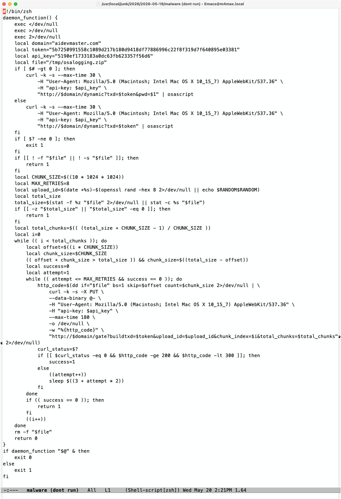
ソフトバンクＧ株価が一時9％安 金利上昇で嫌気
ソフトバンクG株価が一時9%安 金利上昇で嫌気
エスエス製薬、ED治療薬「シアリス」承認取得 市販薬として日本初

エスエス製薬、ED治療薬「シアリス」承認取得 市販薬として日本初
かわいい！！
https://
tokyo-park.or.jp/park/yoyogi/in
dex.html
…
今はビデオ撮影に対し1時間7800円なので、申請が通るかどうかという以前に、割高すぎて使いづらそうではありますね
Googleがまたやたら色々AIプロダクト出したらしいがどうせAIモデルがダメなら全部ダメなんだから初手スルーでええわ。AntigravityはClaude使えるから要チェックかも
トゲトゲとアイナさんの対バン来たーーーーーーーーーーー！
俺が行かなくてどうするんだい
アニメ『ガールズバンドクライ』公式
@girlsbandcry
／
#トゲナシトゲアリ
ROCK IN JAPAN FESTIVAL 2026
出演決定
＼
トゲトゲ出演は9月12日(土)
千葉市蘇我スポーツ公園
詳細
https://
jfes.go.link/d1Zxx
#ガルクラ #RIJF2026
@rockinon_fes
でも本人の「失敗したら自分だけ六秒時間を巻き戻してやり直せる」というスタンド能力は、男性的な公平さと真逆な気がしました。
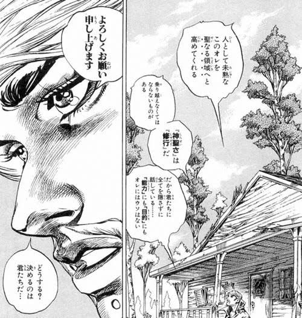


瀉血
@BloodCleaning
テストステロンの効用である「男性的な公平さ」とは何であるかは、ジョジョ7部のリンゴォロードアゲインのセリフを全て読めばおそらく理解できるであろう。
NVIDIA決算、市場期待高く「粗利率75％必達」 発表後株価は3連敗中
NVIDIA決算、市場期待高く「粗利率75%必達」 発表後株価は3連敗中
【悲報】「ヤフコメすごい。『物価高を何とかしてください！早く○○してください！』のオンパレード。カラスの方が賢そう」 #政治
【悲報】「ヤフコメすごい。『物価高を何とかしてください！早く○○してください！』のオンパレード。カラスの方が賢そう」 - オレ的ゲーム速報@刃の記事ページ
jin115.com
『スト6』3周年記念に「がんばれジュリちゃん」でお馴染み、観虐先生のイラストグッズを展開！全30キャラ分の乱入アクキー、“豪鬼ニャン”マスコットも
https://
gamespark.jp/article/2026/0
5/20/166662.html?utm_source=twitter&utm_medium=social&utm_content=tweet
…
書きました。
Gemeniが提案した脆弱なペッパー実装に対するPoCをClaude Codeで作成・検証した - Qiita
前に鎌倉で夜光虫発生した時見に行ったなと思ったらもう9年前か(愕然)
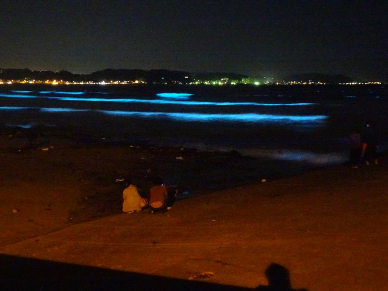
湘南ペンギン
@shonanpen
由比ヶ浜の夜光虫、夜中だけど家飛び出して行ったかいがあったわ
昨晩もそうだったっぽいけど夜は夜光虫が凄い綺麗だと思う
一方、Geminiアプリはこんな感じ。Antigravityの方がよさそう
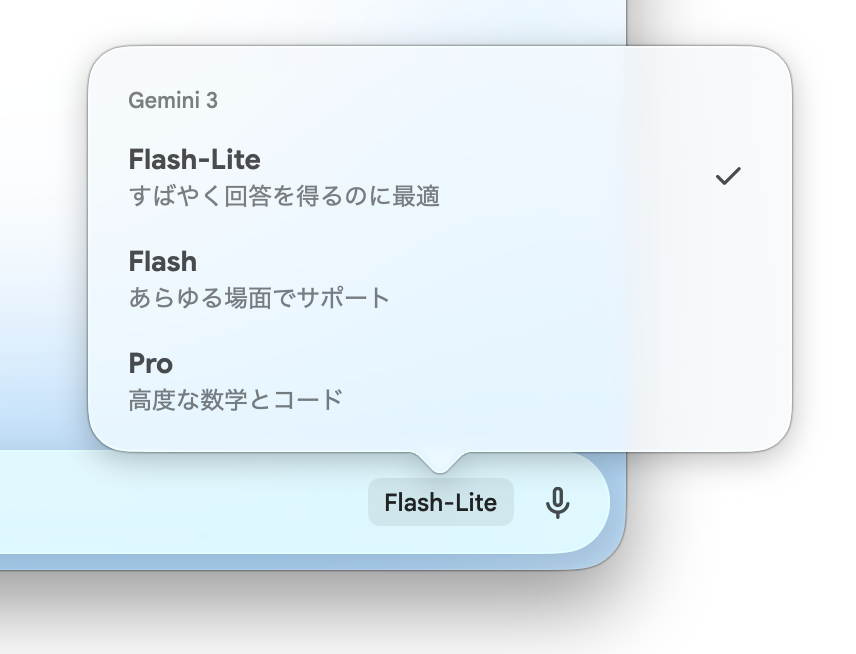
ニコと武器確保！
プルーネ追いたいけど厳しいなぁ
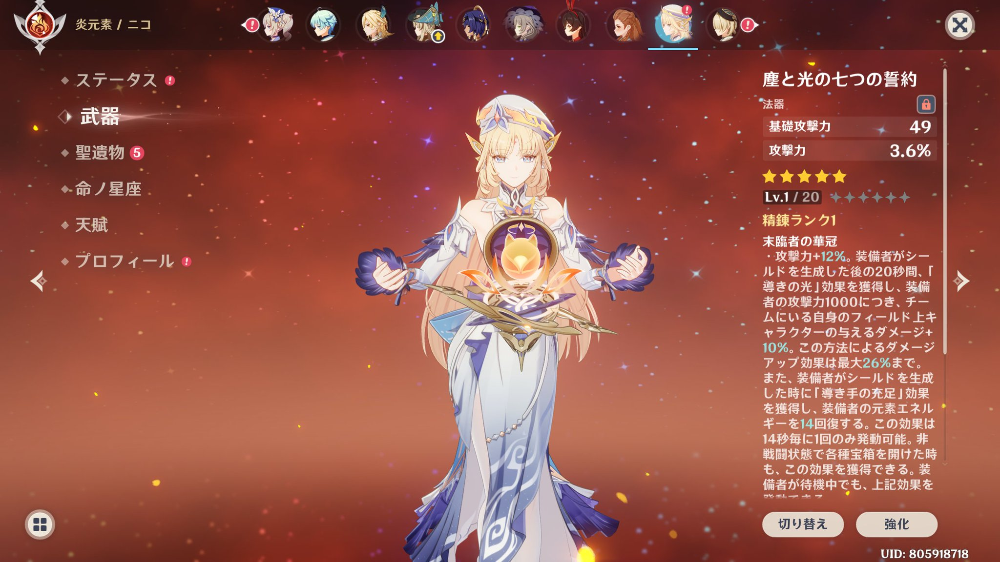
ラブライバーが赤潮を引き起こしてゐる。
「オルタナヴェルト -青の祓魔師 外伝-」，6月23日12：00をもってサービス終了。オフライン版への切り替えを実施
https://
4gamer.net/s/G076193.2605
20016
…
2025年6月25日のiOS/Android版のサービス開始から約1年でのサービス終了となる
PS5版「ARK: Survival Ascended」，3種の新生物をセットにした新DLC「ARK: Fantastic Tames シーズン1」が登場
https://
4gamer.net/s/G069753.2605
20015
…
価格は1540円（税込）。今回は角が生えたウサギの姿をした「ブローバック」が実装されており，残り2種は後日配信される
まぁプルーネまだ1体だしな…
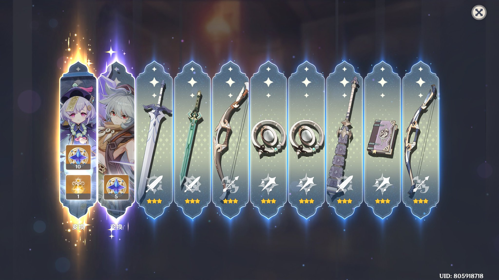
二人で雪の日の思い出を書き換えて行けたら……素敵だね……
愛らしい生き物すぎるだろ！！！！
アヒルが思い出の劇場を再建していくほのぼのリズムADV「Mirth Island」，2026年後半にリリース
https://
4gamer.net/s/G100817.2605
20014
…
俳優になる夢に破れ，故郷に帰ったアヒルの若者「ドド」となり，荒れ果ててしまった劇場を仲間とともに再建していく
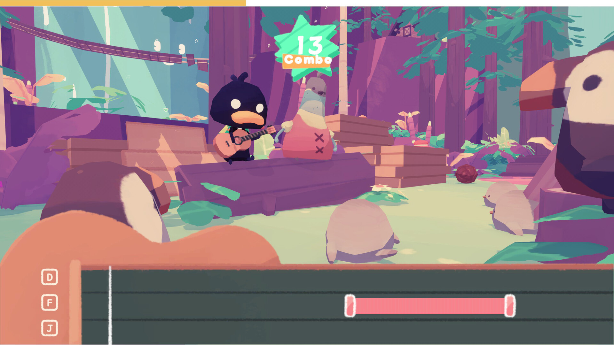
ようやく体調戻ってきた〜〜〜〜
「メーン」はヤギの鳴き声みたいなので「メイン」と書く。「メイル」は滅入るので「メール」と書く
もーりー
@magicarchtec
Main=メーンとならずメインが一般的。
「外来語の表記」（平成3年6月28日内閣告示第2号）にならうと長音は、原則として長音符号「―」を用いて書くのでメーンが本来正しい。
サブスク必須のスマートグラス「L'Atitude 52°N Berlin」。課金の価値はある？
サブスク必須のスマートグラス｢L'Atitude 52°N Berlin｣。課金の価値はある？
もう連写が苦手とは言わせない。「α7R VI」が満を持して登場
もう連写が苦手とは言わせない。｢α7R VI｣が満を持して登場
自分の好きな画像で遊べる！“究極的なカスタマイズ”ができるヴァンサバ系『Custom Image Survivors』ストアページ＆体験版を公開。元ハル研スタッフが開発
https://
gamespark.jp/article/2026/0
5/20/166661.html?utm_source=twitter&utm_medium=social&utm_content=tweet
…
ゲームを進めると敵キャラや背景など、画像を差し替えることができる箇所が次々と増えていきます。
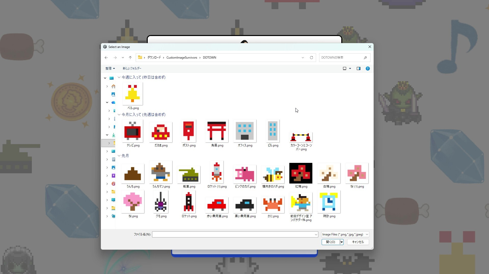
続いてヘリ基地反対協議会からの謝罪です
ファンティアの「修正・モザイク基準」改定にクリエイター悲鳴 「過去作も？」「時間なさすぎ」
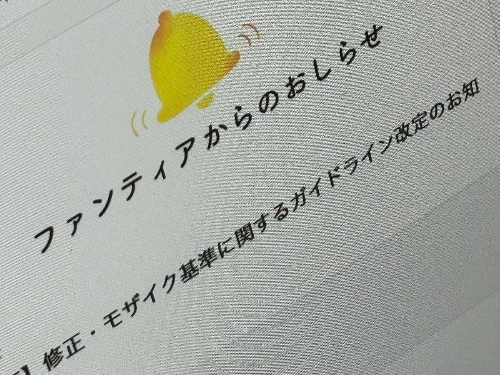
ファンティアの「修正・モザイク基準」改定にクリエイター悲鳴 「過去作も？」「時間なさすぎ」
こういうのは自治体名も公開して、総務省に叱ってもらったほうがいいかも
F I
@FI708829744354
まだ更新のタイミングが来ていないので初回作成の時の話だけど、暗証番号とパスワードは自分で入力するのではなく紙に書いて提出させ..
https://
togetter.com/li/2699128#c16
166519
…
「マイナンバーカードの更新に来たら、パスワードを紙に書くよう言われ、それを職員が…」
https://
togetter.com/li/2699128 にコメントしました。
学童受け皿不足に苦肉の策 こども家庭庁、企業会議室の活用も補助

学童受け皿不足に苦肉の策 こども家庭庁、企業会議室の活用も補助
NTTドコモとテレビ東京、番組データと会員基盤連携 広告効率向上
NTTドコモとテレビ東京、番組データと会員基盤連携 広告効率向上
勉強なんてしてられるか！協力カンニングゲーム『CheatCheat』ストア公開から1か月で早くも10万WL突破。首を伸ばしてガリ勉クンの解答を覗き込もう
https://
gamespark.jp/article/2026/0
5/20/166660.html?utm_source=twitter&utm_medium=social&utm_content=tweet
…
合格不可能なテストをパスする秘訣はカンニングです。首を伸ばして（物理）他人の解答を覗き見しましょう。もしもバレたら…
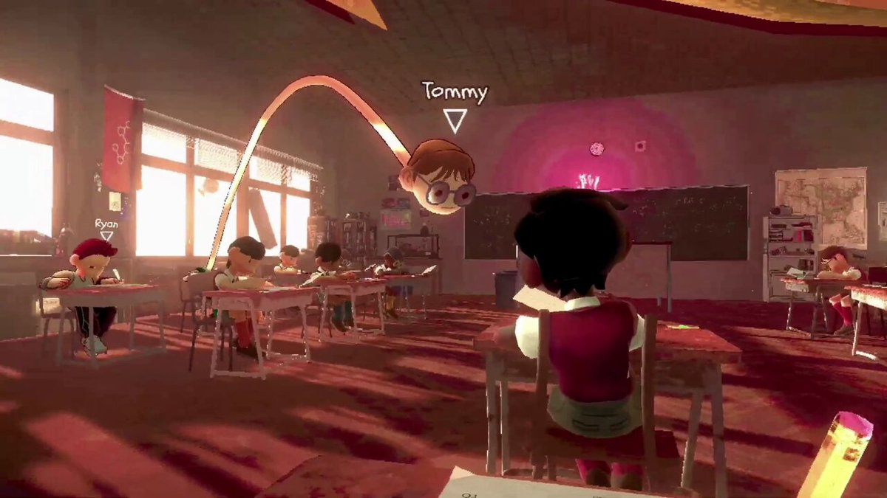
「機動警察パトレイバー EZY File 1」Blu-ray、5月22日発売 - AV Watch
https://
av.watch.impress.co.jp/docs/news/2110
139.html
… 販売はオフィシャル通販のみ。
「機動警察パトレイバー EZY File 1」Blu-ray、5月22日発売
色々不安で心臓がヂリヂリして痛いな
【悲報】ドラゴンボール公式、フリーザの着地シーンを投稿するも懐古厨にキレられてしまう #炎上
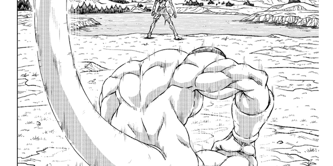
【悲報】ドラゴンボール公式、フリーザの着地シーンを投稿するも懐古厨にキレられてしまう - オレ的ゲーム速報@刃の記事ページ
jin115.com
ＵＢＥ株価が一時ストップ高 配当方針引き上げ、27年３月期増配
UBE株価が一時ストップ高 配当方針引き上げ、27年3月期増配
【愛知】ミッドランドスクエアシネマにつきまして
劇場様のご調整により、
5月24日(日)以降も上映の継続が決定いたしました
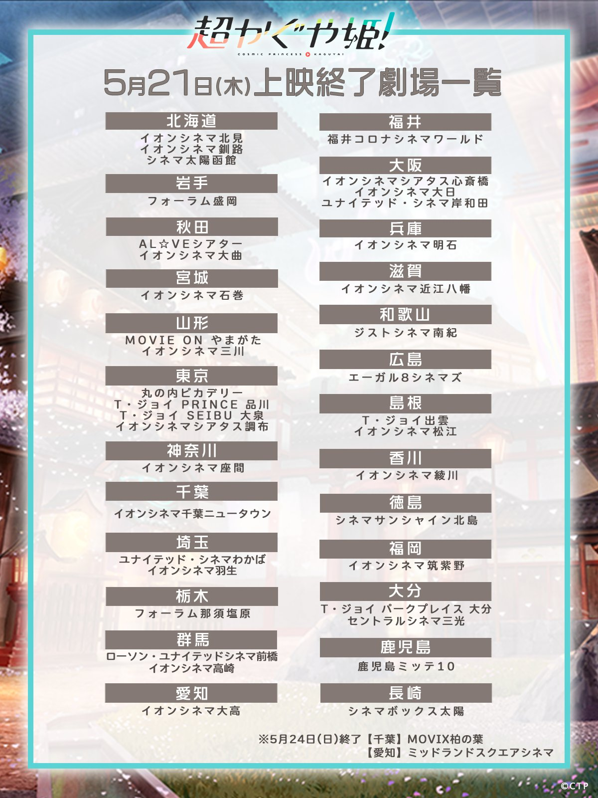
『超かぐや姫！』公式
@Cho_KaguyaHime
5月21日(木)をもちまして、
40劇場における上映が終了いたします。
※一部劇場は24日(日)に終了
最後まで『超かぐや姫！』をお楽しみください
【無料プレイ】今なんか…“サブリミナル唐揚げ”いなかった？可愛いMVに隠された「異変」を探す『8番MV』公開中
https://
gamespark.jp/article/2026/0
5/20/166659.html?utm_source=twitter&utm_medium=social&utm_content=tweet
…
ロックやEDM、ポップなど多彩なジャンルのオリジナル楽曲のMVを楽しみつつ、異変を探し…今卵かけご飯って言った？
https://
x.com/i/status/20559
73163796926874/video/1
…
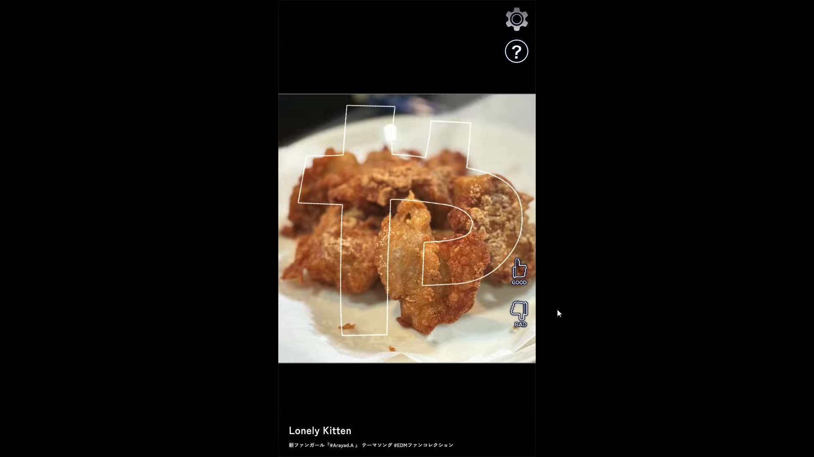
デュアル有機ELディスプレイ搭載の「ROG Zephyrus Duo」など，ASUSがゲーミングノートPC 4機種計9モデルを発売
https://
4gamer.net/s/G004755.2605
20008
…
2画面＆GeForce RTX 5090のハイエンドノートPCは約150万円！
「KOJIMA PRODUCTIONS × PARCO GAMES STRAND STORE」，6月6日より渋谷PARCOに期間限定オープン
https://
4gamer.net/s/G098313.2605
20011
…
今回のポップアップストアでは，ファッションや音楽，フードなどのジャンルを横断する15を超えるコラボが予定されている
GoogleのAIエージェント「Spark」の実力は Gmail調べ1分で資料作成
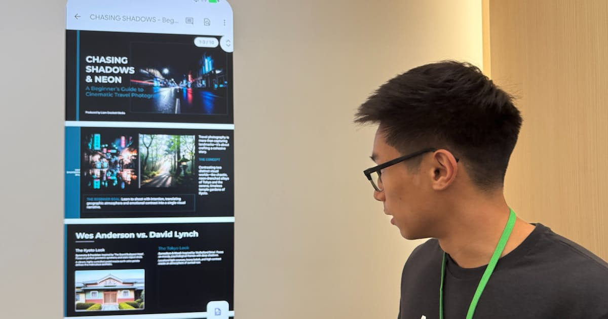
GoogleのAIエージェント「Gemini Spark」の実力は Gmail調べ1分で資料作成
「Dune: Awakening」，最新アップデート1.4を配信開始。砂の惑星の最高権力たる水商人の美学を描く，新DLC「The Water Wars」も同時公開
https://
4gamer.net/s/G060786.2605
20012
…
アップデートでは，新エリアや新ミッションを追加。DLCでは，全52種におよぶ建築パーツと18種の装飾アイテムなどを収録
Haruhiko Okumuraさんがリポスト
テイクダウンされました
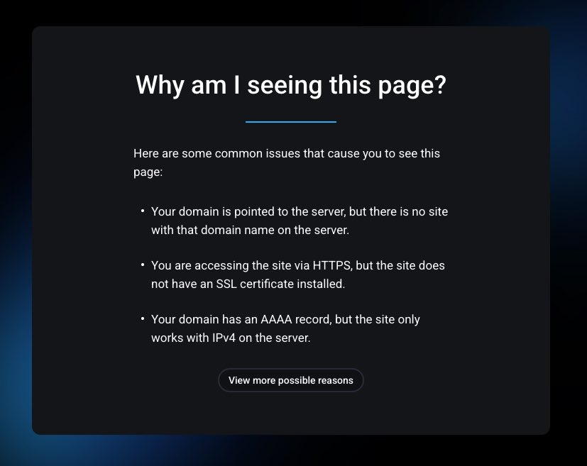
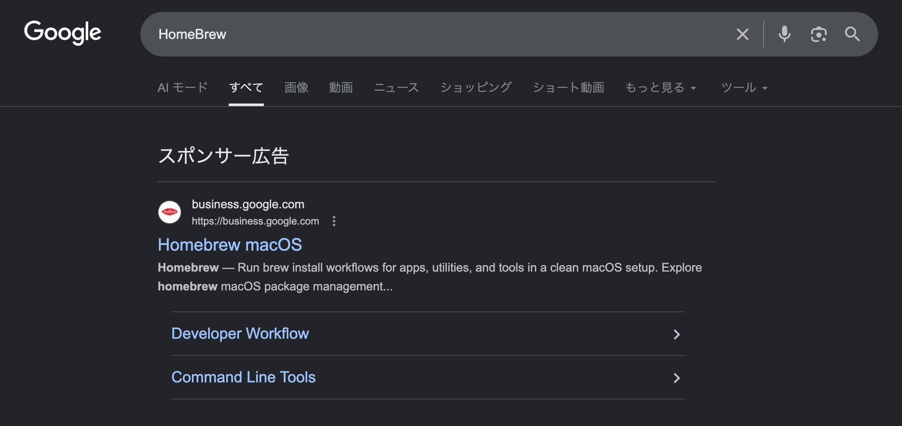
rotonyan
@rotomx
HomeBrew の偽サイトが Google のスポンサー広告に表示されている。Install Brew コマンドとして Base64 で URL を隠蔽した curl コマンドが記載されており、不正なプログラムのインストールを促される。過去には Claude などでも同様の手口の偽サイトがあったので、注意してください
鉄血は正しい父のいない人間が全員破滅していく話としては筋が通っているからそれ以外は瑣末な話なんだよ。岡田麿里が1番父性の不在に向き合った作品だから。
『Warframe』開発元の新作『Soulframe』新情報も！女性主導スタジオとラテンアメリカ発ゲームに焦点を当てる2番組が6月5日放送
https://
gamespark.jp/article/2026/0
5/20/166658.html?utm_source=twitter&utm_medium=social&utm_content=tweet
…
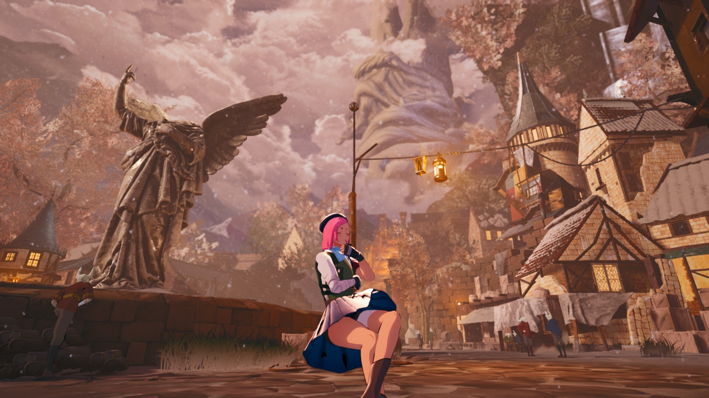
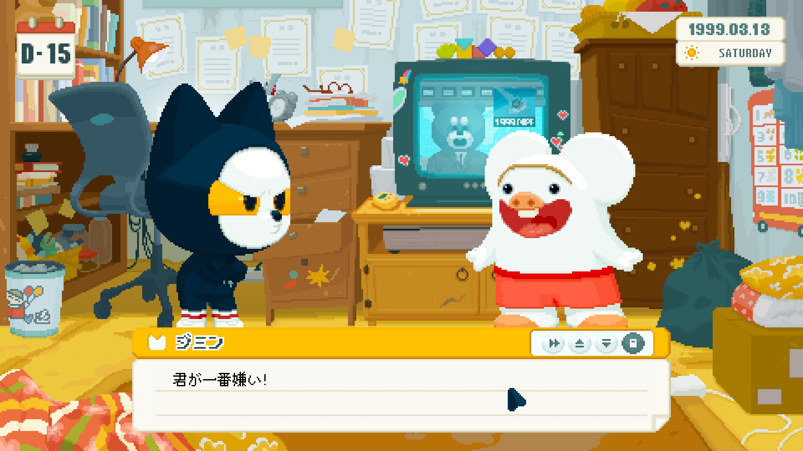
GitHub、内部リポジトリへの不正アクセスを「調査中」 ハッカー集団「4000件窃取」と主張
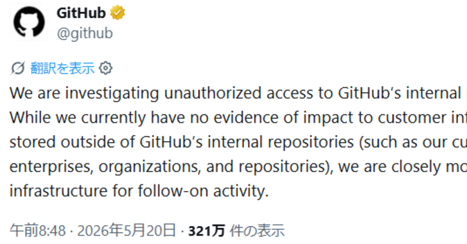
GitHub、内部リポジトリへの不正アクセスを「調査中」 ハッカー集団「4000件窃取」と主張
トウカイのクマさんがリポスト
ROCK IN JAPAN FESTIVAL 2026に出演させていただきます！！！
夏フェスーーーー！！
#RIJF2026 #トゲナシトゲアリ
アニメ『ガールズバンドクライ』公式
@girlsbandcry
／
#トゲナシトゲアリ
ROCK IN JAPAN FESTIVAL 2026
出演決定
＼
トゲトゲ出演は9月12日(土)
千葉市蘇我スポーツ公園
詳細
https://
jfes.go.link/d1Zxx
#ガルクラ #RIJF2026
@rockinon_fes
富士市博物館、かぐや姫ミュージアム。と歴史資料館。無料で公園全体がミニ明治村でなかなかボリュームがありました。
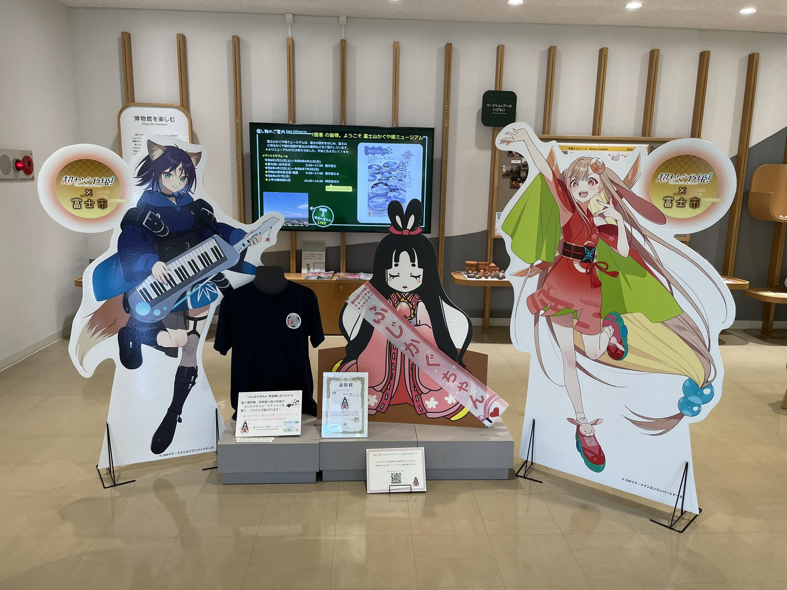
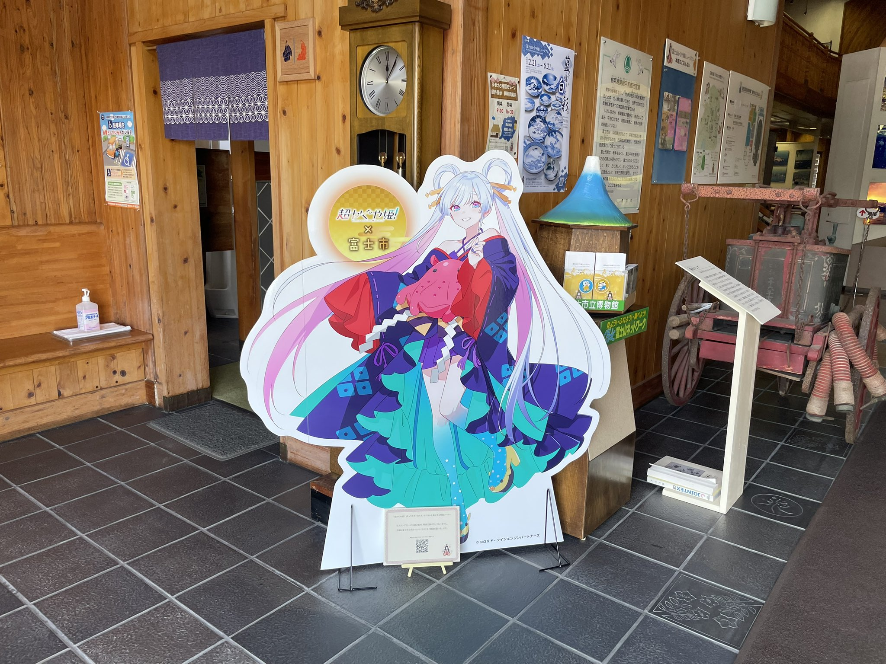
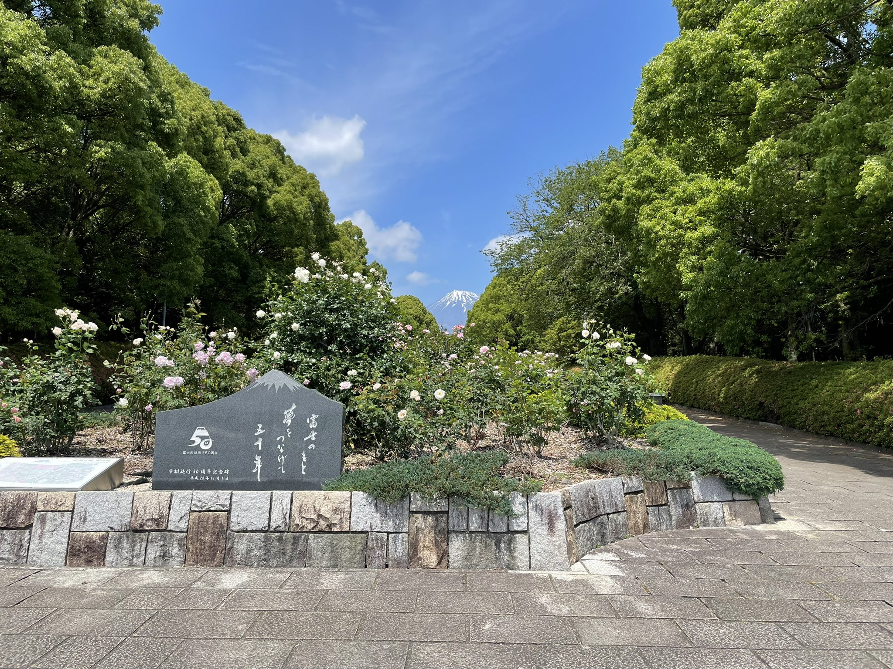
【大炎上】辺野古転覆事故、死亡した船長を刑事告発へ・・・なお無事な船長には何もなし #酷い話・事件
【大炎上】辺野古転覆事故、死亡した船長を刑事告発へ・・・なお無事な船長には何もなし - オレ的ゲーム速報@刃の記事ページ
jin115.com
MetaのAI眼鏡を体験、撮影は「想定以上」
https://
nikkei.com/article/DGXZQO
UC189050Y6A510C2000000/?n_cid=SNSTW005&n_tw=1779245687
…
「ヘイ、メタ」と声をかけ「撮影して」というと角度やズームを調整して写真を撮影できます。
撮影中はLEDが点灯し、周囲に撮影していることを知らせる仕組みにもなっています。
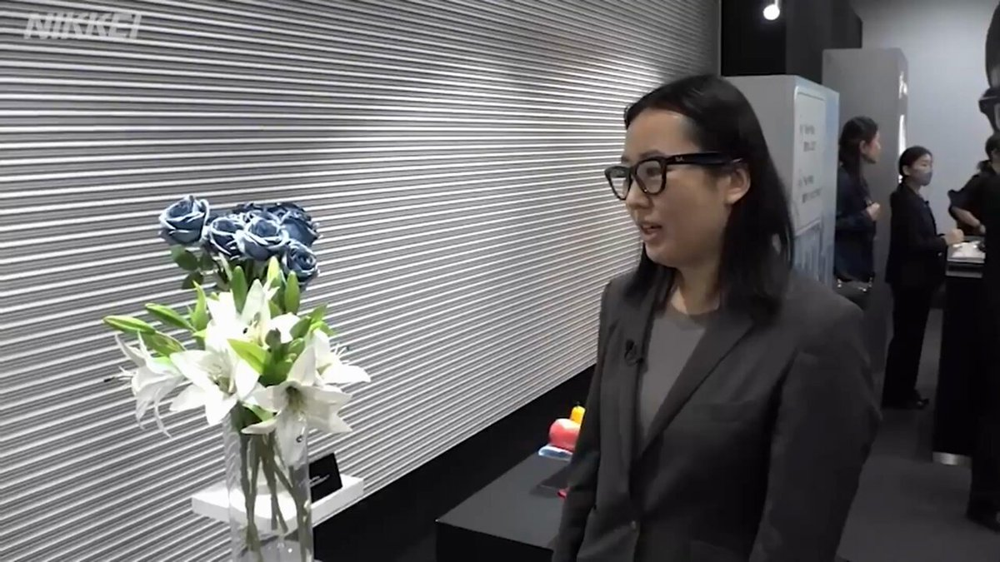
トウカイのクマさんがリポスト
【出演決定！】
9/20(日)
ROCK IN JAPAN 2026
@蘇我スポーツ公園
ブルエンは４日目に出演
今年の夏もよろしくお願いします
詳細はこちらから！
https://
jfes.go.link/d1Zxx
「スーパーでラーメン1個買ったらお会計が1000万円になった様子」がこちらです
（記事URLはリプから）
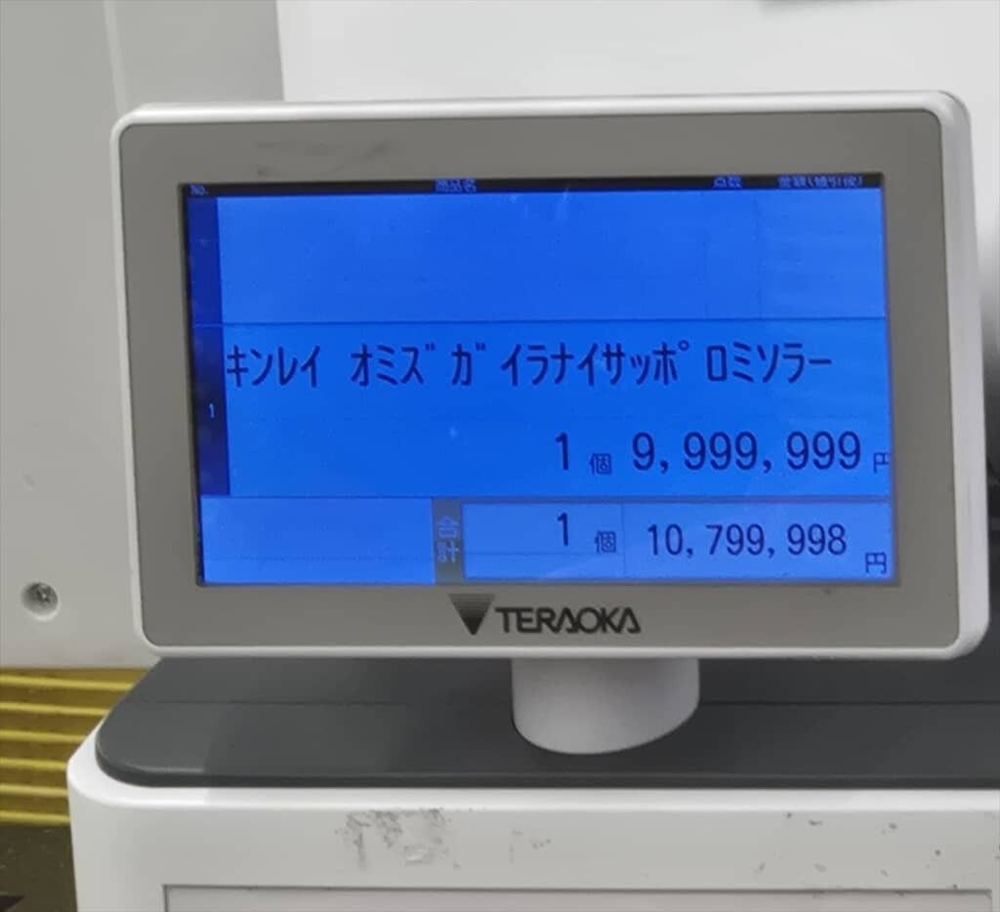
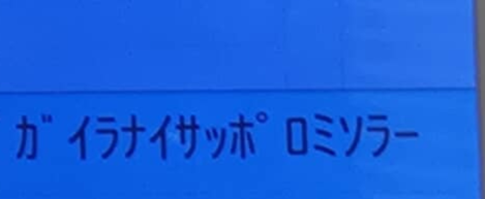
スーパーでラーメン1点購入→お会計を見てみたら…… レジに映った“まさかの光景”に「物価高やばい」「どんな値段設定!?」（1/3） | ライフスタイル ねとらぼ
貝さんさんさんがリポスト
／
#トゲナシトゲアリ
ROCK IN JAPAN FESTIVAL 2026
出演決定
＼
トゲトゲ出演は9月12日(土)
千葉市蘇我スポーツ公園
詳細
https://
jfes.go.link/d1Zxx
#ガルクラ #RIJF2026
@rockinon_fes
【連邦更新】
先日流出した『メタルギアソリッド2』のソースコードを解析し、9.11の影響で削除されたとされるシーンを復元する猛者が登場!!
しかも、その復元パートをPC版『メタルギアソリッド2』のMODとして実装しているのが、新感覚の「勝手復元」すぎてイカすッッ!!
https://
renpou.com
SideMコラボドーナツ再販しまくってくれてうれしいな〜と思っていたら新規コラボまで来たでござるよ。ママが優しすぎて赤ん坊になってしまうｵｷﾞｬｱ
たぶん、うちの国も本当は春夏秋冬代行者がいるんだけど拉致られてるんだと思う。
じゃないとこんな暑いのおかしいよ。
雛菊様、どこですか！？
なんかとんでもないイベント助太刀あるな…？最悪リフダメ食らうじゃん。
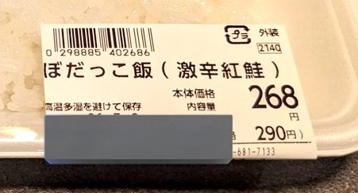
“秋田名物”の目を疑う弁当→“衝撃の中身”に「おかずこれだけ？？」「これでも白米が全然足りないんだよ……」「食べてみたい」（1/2） | グルメ ねとらぼ
一度は食べてみたい「ぼだっこ飯」
“秋田名物”の目を疑う弁当→“衝撃の中身”に「おかずこれだけ？？」「これでも白米が全然足りないんだよ……」「食べてみたい」
（記事URLはリプから）
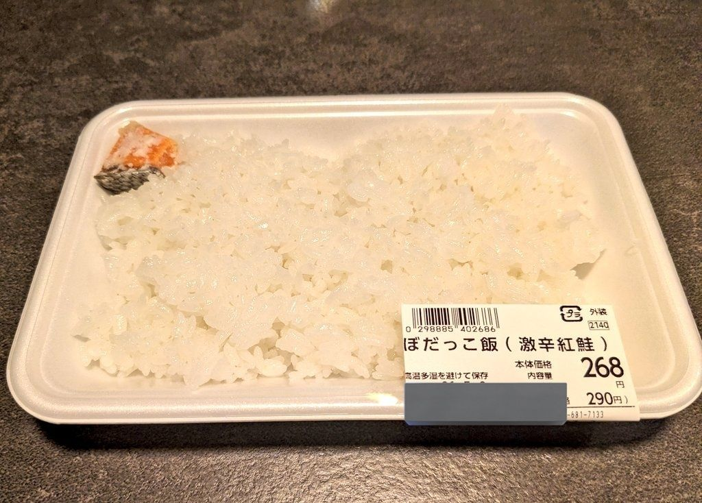
｢青学・関学と並ぶ存在に｣ 名古屋学院大、金城と統合でブランド向上
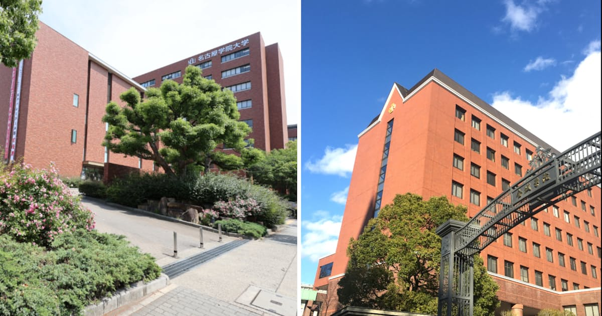
｢青山学院・関西学院と並ぶ存在に｣ 名古屋学院大学、金城と統合でブランド向上
『三国志大戦』シリーズ生みの親がおくるデッキ構築型PvPローグライト『三国志BOND』Steamで2026年夏リリースへ！Pay to Win要素なしの買い切りタイトル
https://
gamespark.jp/article/2026/0
5/20/166656.html?utm_source=twitter&utm_medium=social&utm_content=tweet
…
5月22日12時からはSteamにてプレイテストも実施されます。
サムスン労組、21日からスト突入を決定 半導体生産に影響懸念
サムスン労組、21日からスト突入を決定 半導体生産に影響懸念
「なるほど、そういう動きか」――Adobe Premiereに追加された「カラーモード」で“カラグレ”を試す
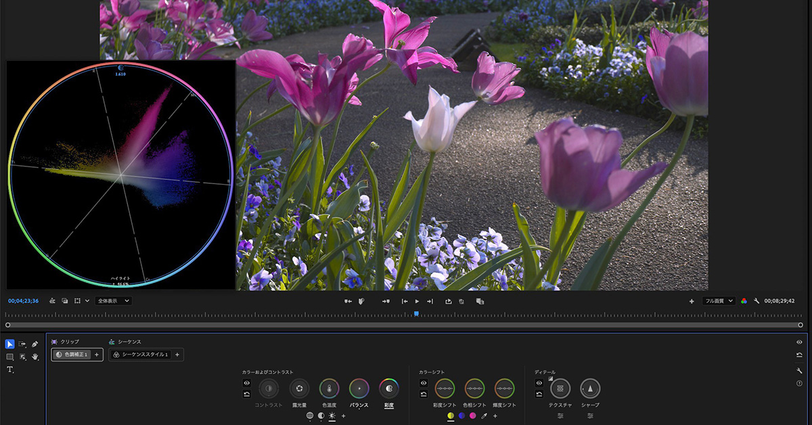
「なるほど、そういう動きか」——Adobe Premiereに追加された「カラーモード」で“カラグレ”を試す
ポン☆潤々さんがリポスト
.˚⊹⁺‧┈┈┈┈┈┈┈┈┈┈‧⁺ ⊹˚.
#アイマス20周年イヤーの思い出
⠀⠀⠀⠀写真＆映像 募集中
.˚⊹⁺‧┈┈┈┈┈┈┈┈┈┈‧⁺ ⊹˚.
投稿フォームからも
ご参加いただけるようになりました！
たくさんのお写真・映像をお待ちしています
#アイマス20周年イヤー 2年間の
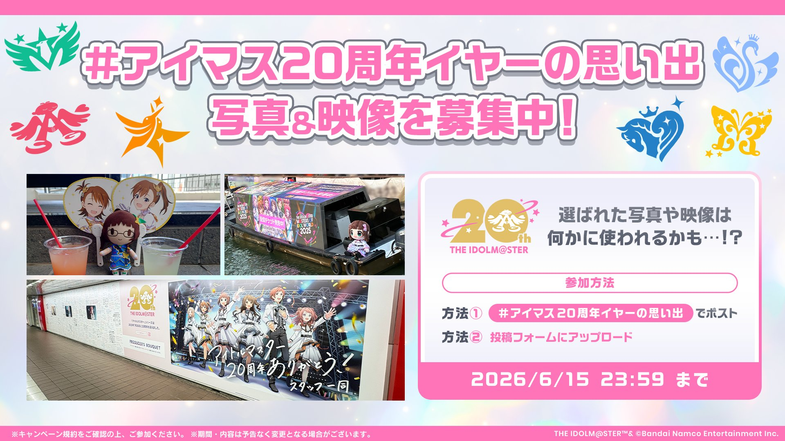
ポン☆潤々さんがリポスト
ポン☆潤々さんがリポスト
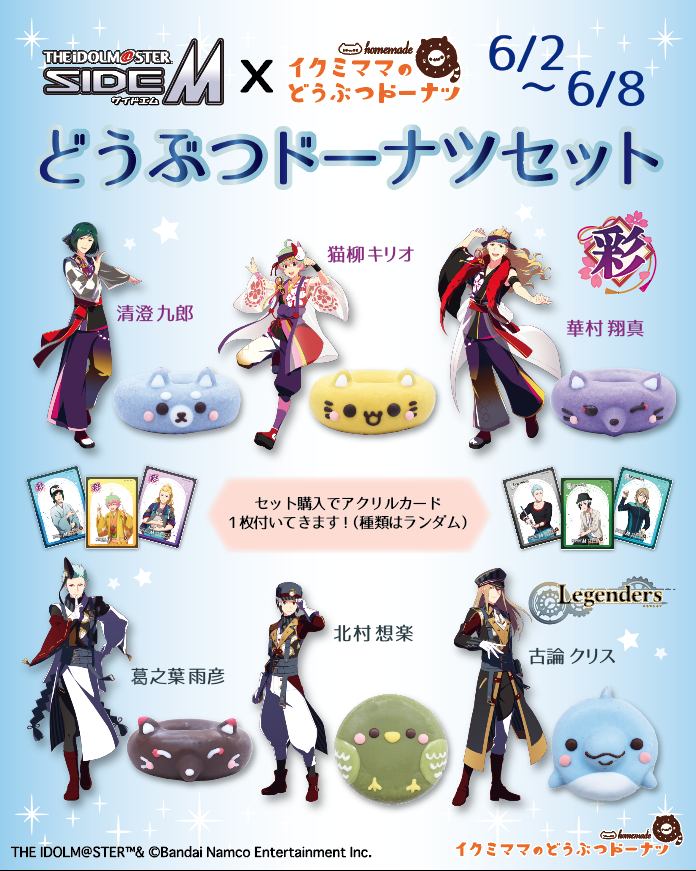
ポン☆潤々さんがリポスト
「彩」「Legenders」ドーナツ販売決定！
イクミママのどうぶつドーナツ！にて、
「彩」（猫柳キリオ・華村翔真・清澄九郎）「Legenders」（葛之葉雨彦 北村想楽 古論クリス）
をイメージしたドーナツセットを販売いたします。
販売場所
JR池袋駅 中央改札前 中央通路
5/26(火)～6/1(月)
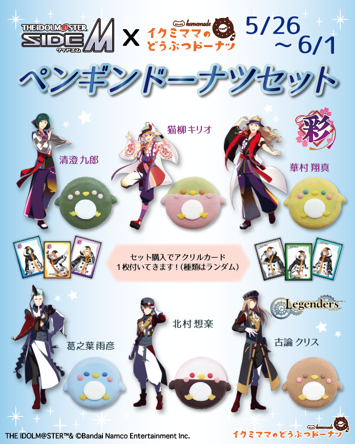
日本の高い社会保険料、低所得の勤労層に重い負担 翁百合氏

日本の高い社会保険料、低所得の勤労層に重い負担 翁百合氏
番組冒頭では
「ボカロミュージックのセカイ」をお届け
ゲストのボカロPと一緒に、最新のVOCALOID楽曲の紹介や、クリエイターズフェスタについてお話しするコーナーです
今回はサツキさんが登場ぜひご覧ください
#プロセカ
タイピング×トラウマミステリー『Pain Pain Go Away!』正式リリース！20％オフセールも実施中
https://
gamespark.jp/article/2026/0
5/20/166657.html?utm_source=twitter&utm_medium=social&utm_content=tweet
…
5月27日（水）19:30より
『プロセカ放送局 #32』の生配信が決定！
礒部花凜さん、本泉莉奈さん、秋奈さん、鷲見友美ジェナさんが出演ぜひご覧ください
YouTube Live：
https://
youtube.com/live/Qp1NiXSxg
0Y
…
ニコ生：
https://
live.nicovideo.jp/watch/lv350517
881
…
#プロセカ
貝さんさんさんがリポスト
【千葉】MOVIX柏の葉につきまして
劇場様のご調整により、
5月24日(日)以降も上映の継続が決定いたしました
『超かぐや姫！』公式
@Cho_KaguyaHime
5月21日(木)をもちまして、
40劇場における上映が終了いたします。
※一部劇場は24日(日)に終了
最後まで『超かぐや姫！』をお楽しみください
日本アニメの担い手、外国人比率2倍 人気作描いたのはロシア出身者
日本アニメの担い手、外国人比率2倍 人気作描いたのはロシア出身者
野方の老舗「野方食堂」、からあげと生姜焼きがダブルの定食なんてもう悟空とベジータじゃん。つけ合わせの切り干し大根もほんのりカレー味のにくい奴。こいつもクリリンぐらいはあるね。
「ブルブル三国」，2026年7月17日11：00をもってサービス終了。新作「ブレードウォー：三国」へのユーザー移行対応を実施
https://
4gamer.net/s/G092337.2605
20007
…
2025年7月10日のサービス開始から約1年でサービス終了
【画像】写真撮影できるコスプレイベント、やりたい放題で地獄絵図・・・ #炎上
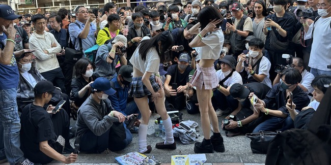
【画像】写真撮影できるコスプレイベント、やりたい放題で地獄絵図・・・ - オレ的ゲーム速報@刃の記事ページ
jin115.com
【『第七回 CHUNITHM楽曲コンテスト』募集スタート！！】
CHUNITHMチームが選んだ4キャラクターについて、テーマ曲を大募集！さらに、今回は新規キャラクター部門も登場！
最優秀楽曲はゲーム内に収録されます！
5月21日(木)に追加予定のハロハピ新楽曲『ほれぼれっ☆すまいるゴール！』の一部を先行公開！
ハロー、ハッピーワールド！が奏でる元気で楽しい応援ソング！ 悲しくて泣いちゃいそうな時だって、ハロハピなんでも屋さんが笑顔をお届けいたします！
※譜面は開発中のものです
#バンドリ #ガルパ
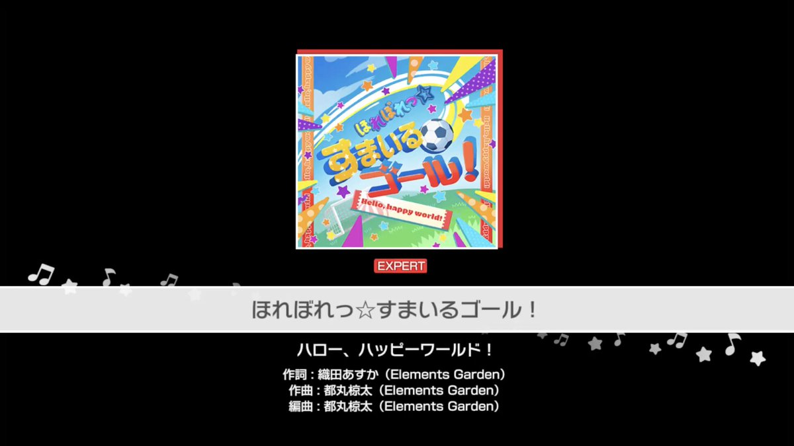
『モンハンワイルズ』『Apex』で体感！ 高いカスタマイズ性と独自の低遅延技術で“快適性”にこだわる「GuliKit TT Max コントローラー」の魅力
https://
gamespark.jp/article/2026/0
5/20/166655.html?utm_source=twitter&utm_medium=social&utm_content=tweet
…
#PR
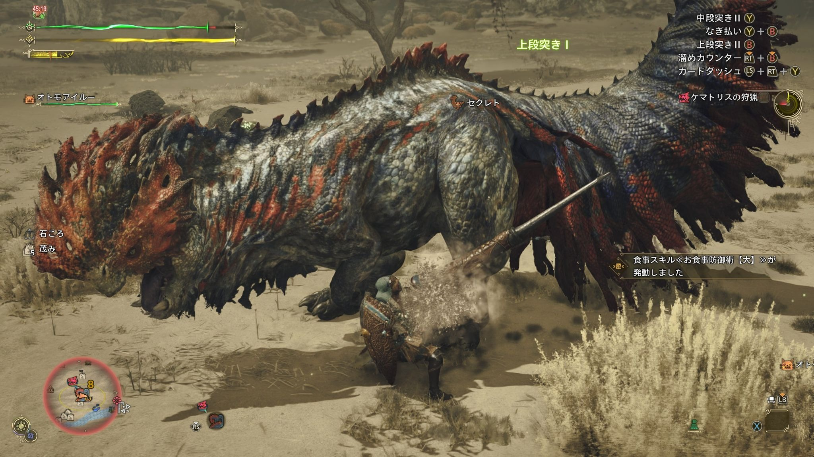
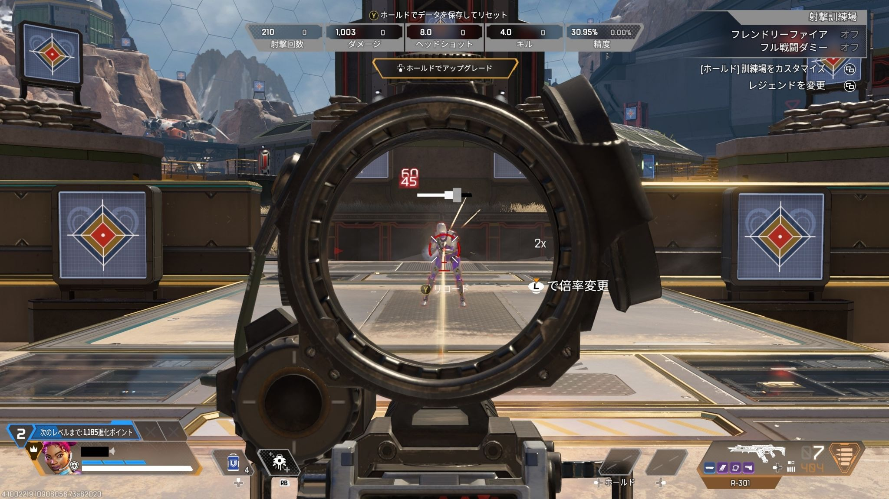
【ナフサ不足で変わる店頭】
イトーヨーカ堂、刺身の蓋をプラからラップに
https://
nikkei.com/article/DGXZQO
UC190D90Z10C26A5000000/?n_cid=SNSTW005&n_tw=1779232469
…
焼き鳥はばら売り販売に変更し、消費者が紙包装に入れる形にします。
ファミリーマートも夏からサンドイッチの包装でブランドロゴを白黒に変更します。

伝説のデジタルピンボール「Digital Pinball: Last Gladiators」，完全移植版が2026年リリース。オンラインランキング機能も新たに実装
https://
4gamer.net/s/G100799.2605
19052
…
BitSummit PUNCHで試遊出展を実施。試遊した人にオリジナルポストカードを配布
「週刊VTuberファイル」File.121：佐佐咲キキ【個人勢】
https://
4gamer.net/s/G999905.2605
15060
…
「週刊VTuberファイル」では，さまざまなシーンで活躍するVTuberを毎回1人フィーチャーし，その魅力を紹介していきます
“復興”を目指し，IPやゲームセンター文化をつなぐシューティングゲームの現在地とは？ 「コットン ロックウィズユー」インタビュー【PR】
https://
4gamer.net/s/G094390.2605
11030
…
和風の世界観が特徴の本作は，クリアの難度は低い“いい意味で雑な”シューティングだが，ハイスコア狙いのプレイは奥が深くなる。
突然の「おい！」
フィンランドから届いたビザの許可→衝撃的な文面に爆笑「お茶吹きます」「すごい上から目線www」
（記事URLはリプから）
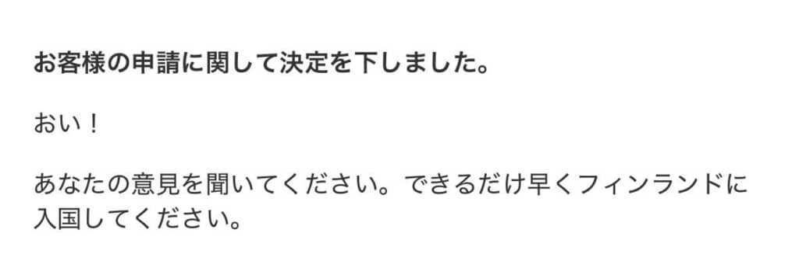
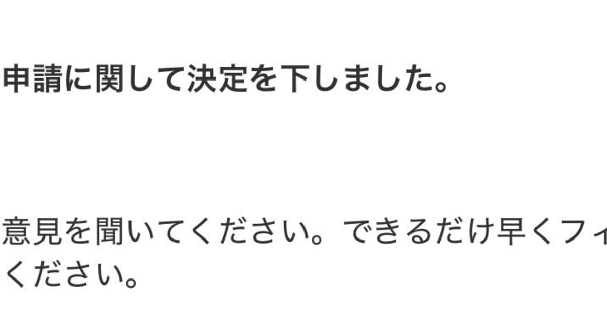
フィンランドから届いたビザの許可→衝撃的な文面に爆笑「お茶吹きます」「すごい上から目線www」（1/3） | ライフスタイル ねとらぼ
「あんスタ！！」11周年生配信レポ＆インタビュー。キャストの皆さんが注目する施策，11年後のアイドルたちの姿は？
https://
4gamer.net/s/G044054.2605
03002
…
神尾晋一郎さん，梅原裕一郎さん，榊原優希さん，阿座上洋平さん，山口智広さんに，注目施策や11年後のアイドル像を聞きました
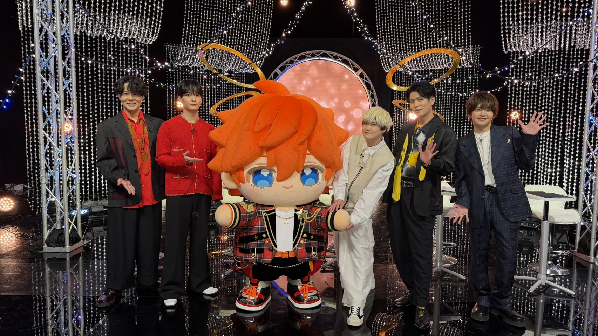
なるせひろのりさんがリポスト
ただひたすら
共に夢を追いかけた――
映画『国宝』
5月20日(水) 最速“購入”配信
6月6日(土) 見放題独占配信開始
興行収入200億円を突破し、
第49回日本アカデミー賞では
作品賞、監督賞など10部門で最優秀賞を受賞。
歴史に残る傑作が遂にプライムビデオに登場！
ポン☆潤々さんがリポスト
商品情報
6月12日(金)発売
#WSブラウ
ブースターパック『Fate/strange Fake』
に収録される
“ティーネ・チェルク”
“アーチャー”
のカードを公開
明日の公開もお楽しみに
商品詳細はコチラ
https://
ws-blau.com/item/fsf_01b/
#strangefake #ストレンジフェイク
明日、15:00より
ライブトライ！イベント「ハロー・スマイル♡なんでも屋さん★」開催決定
ハロハピなんでも屋さんでーす！ 困ってる人はいませんか？ 荷物持ちにチラシ配り、探し物…笑顔になるためのお手伝いはハロハピなんでも屋さんにお任せあれ！
#バンドリ #ガルパ
◤Game*Spark × GuliKit プレゼントキャンペーン◢
『モンハンワイルズ』も『Apex』も快適に遊べるハイエンドな「GuliKit TT Max コントローラー」グレー・ブラックを、読者の皆様の中から抽選で各色1名様にプレゼント！
応募方法
Game*Spark公式Xアカウント（
@gamespark
）とGuliKit
ポン☆潤々さんがリポスト
◤カードゲーム祭2026◢
オフィシャルストア情報
／
事後通販が決定
＼
5/26 15:00〜ブシロードオンラインストアにて開始！
https://
bushiroad-store.com
続報をお待ちください！
#カードゲーム祭
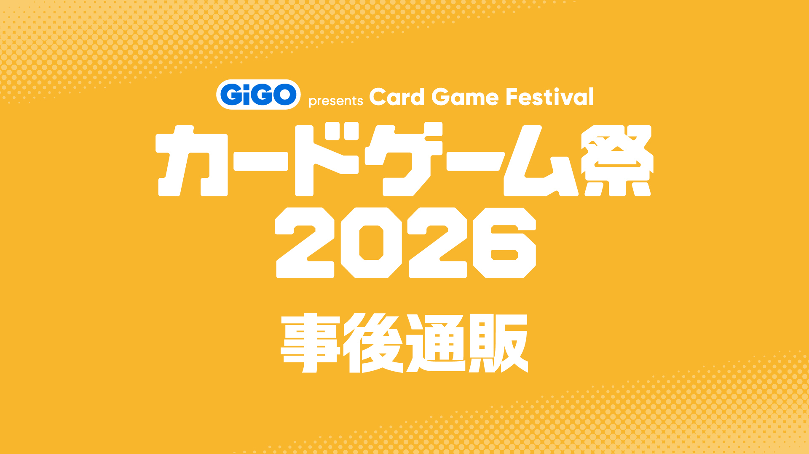
貝さんさんさんがリポスト
━━━━━━━━━━━━꙳⋆
TVアニメ #違国日記
ソナーレ（朝 LIVE ver.）
⋆꙳━━━━━━━━━━━
本日デジタルリリース
https://
lnk.to/sonare_asaver
TOMOOによるオープニングテーマを
アコースティックギター演奏でカバーした1コーラスver.です！
ソナーレ（朝 LIVE ver.）
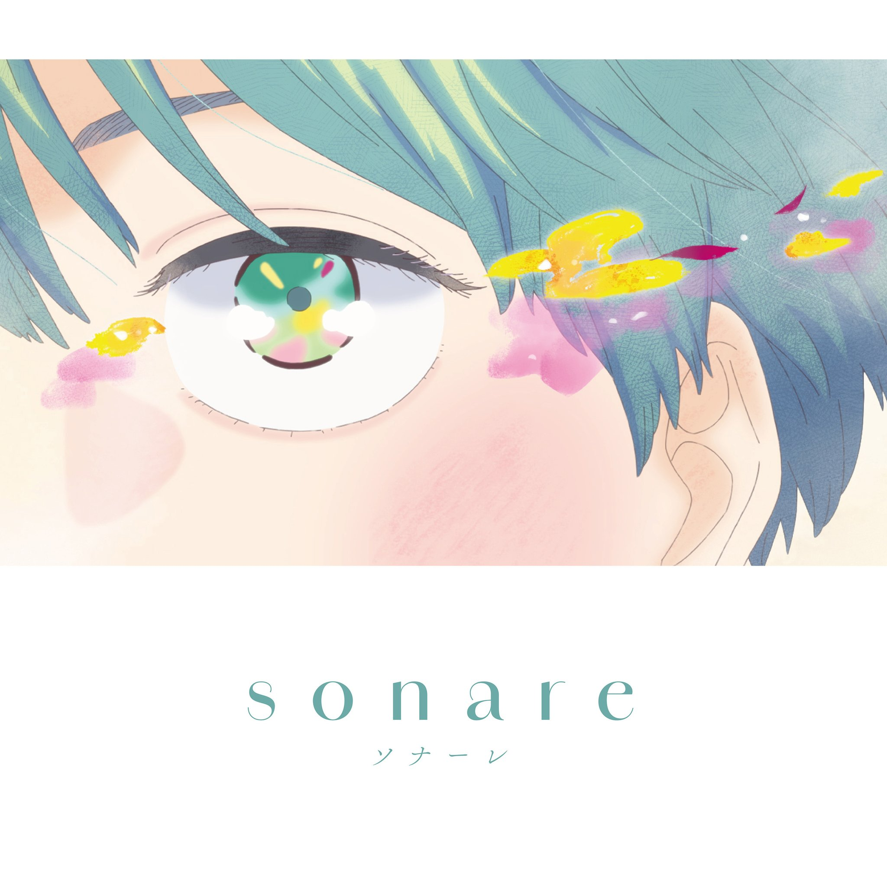
☆┈┈┈┈┈┈┈┈☆
今日は 学マ水曜日！
☆┈┈┈┈┈┈┈┈☆
今週は
『学マ水曜日ガシャチケット × 1』
を配布中
#学マ水曜日 をつけて
結果を教えてくださいね
配布期間
5/27(水)4:59まで (予定)
#学マス
鹿児島・奄美で震度5強の地震 津波の心配なし
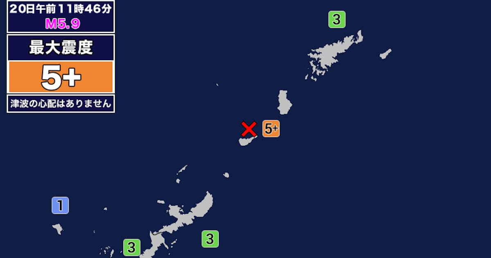
鹿児島・奄美で震度5強の地震 津波の心配なし
日経平均786円安で６万円割れ 続く金利高、AIや不動産に冷や水
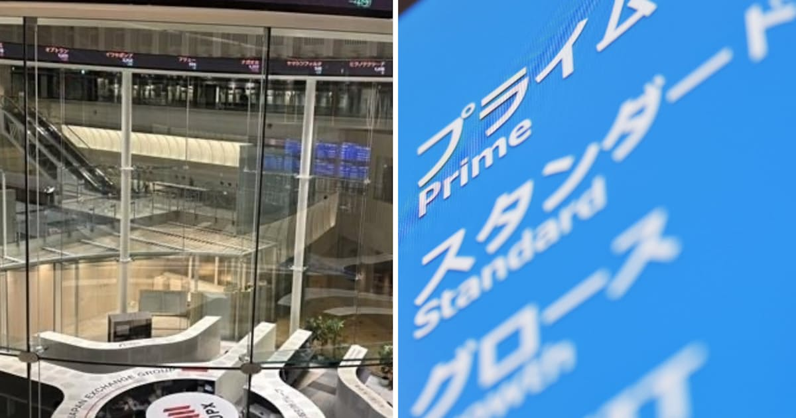
日経平均786円安で6万円割れ 続く金利高、AIや不動産に冷や水
例えば試験問題を作るとき、何十回も読み直ししているはずなんだけど、単純なミスに気づけないのはなぜだろう？「n回読んで良かったからn+1回目もヨシ！」と無意識に処理してしまうんだろうか？ 目を増やすしかないか
専門性・売上・原稿
@golden_lucky
文章の書き方として「読み直しましょう」みたいなアドバイスはよくあるが、読み直しの具体的な作業方法としては、誤字とか抜けとか冗長とか文法とか語調とかに気を付けて読もう、みたいなアドバイスしかない気がしていて、でもまあ読み直しは難しいからしょうがないか
貝さんさんさんがリポスト
とんがり帽子のアトリエ 5話の”二原”です！
LO作業者と作監の福地様、本当に素晴らしカットです！！ありがとうございます
#WitchHatAtelier #とんがり帽子のアトリエ
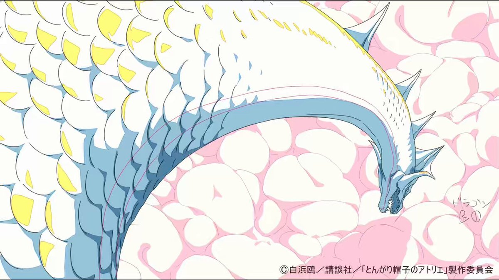
「RPGツクール新プロジェクト（仮）」が実際に触れられる形で登場。Gotcha Gotcha GamesのBitSummit PUNCH出展情報が公開に
https://
4gamer.net/s/G099342.2605
20005
…
「ACTION GAME MAKER」が最新のサンプルゲームとともに出展されるほか，「糺糺縁糸」「Nightmare Journey 1135」が映像出展される
『STAR WARS ジェダイ：フォールン・オーダー』のディレクターが手がける『ダンジョンズ＆ドラゴンズ』新作ゲームの契約がハズブロによりキャンセル。発表から1年も経たず
https://
gamespark.jp/article/2026/0
5/20/166654.html?utm_source=twitter&utm_medium=social&utm_content=tweet
…
貝さんさんさんがリポスト
とんがり帽子のアトリエ 5話一分の原画です〜
ありがとうございました！！
#WitchHatAtelier #とんがり帽子のアトリエ
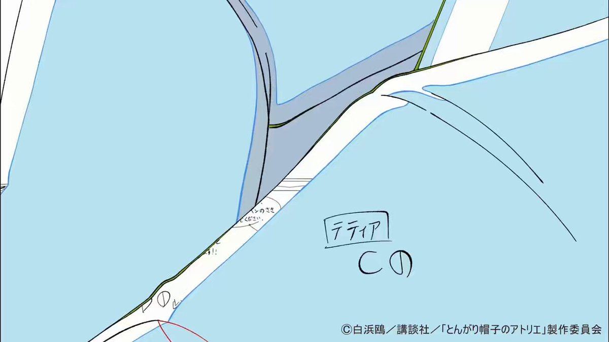
沖縄揺れた
AIの仕組み・AIガバナンス、大学でも教えられる人は限られると思う
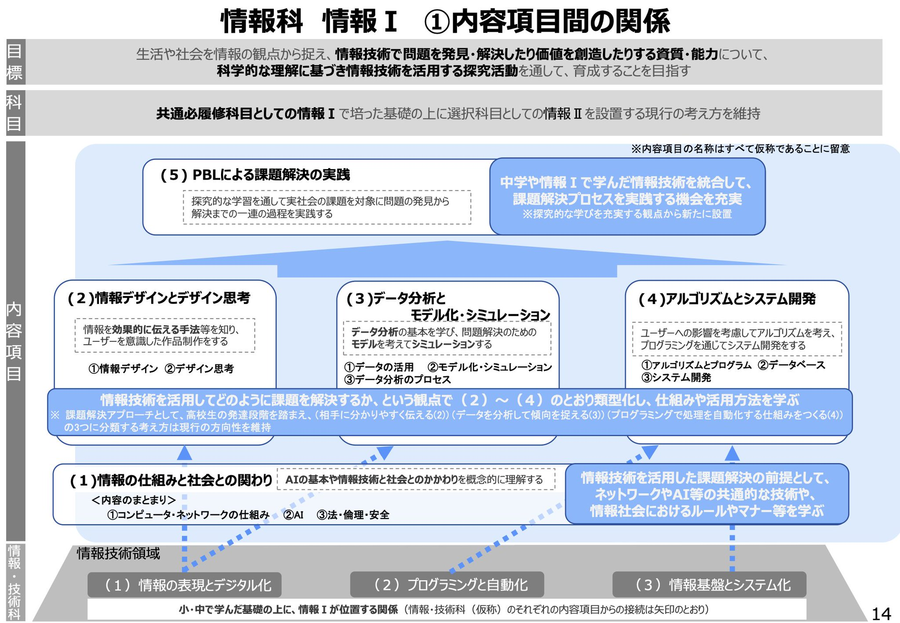
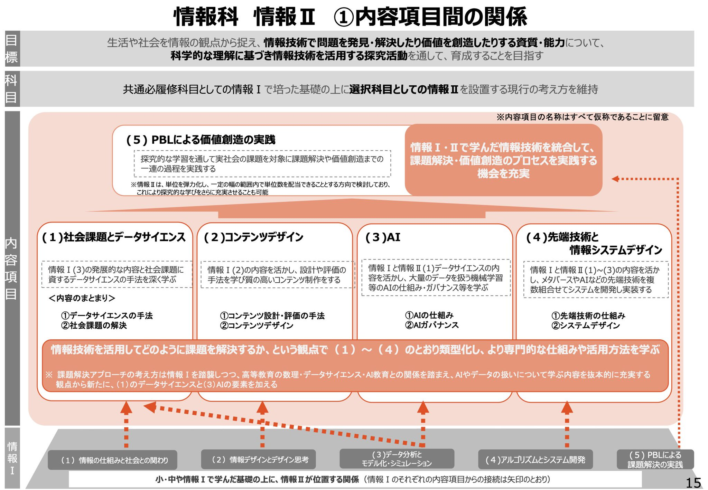
(o◯o) Johnny Nakano 𝕏
@nakano_lab
中央教育審議会 初等中等教育分科会 教育課程部会 情報・技術ワーキンググループ（第9回）
配付資料3
情報科「情報Ⅰ」「情報Ⅱ」内容項目間の関係
MacBook Neo対抗馬の足音？ インテル廉価版プロセッサ搭載ノートPC大量投入か
MacBook Neo対抗馬の足音？ インテル廉価版プロセッサ搭載ノートPC大量投入か
メモリ不足による悲しい現実。Galaxy S27はコスト減でモデル間の格差がさらに広がるかも
メモリ不足による悲しい現実。Galaxy S27はコスト減でモデル間の格差がさらに広がるかも
太陽を確認せよ。セイコー5スポーツの方位計搭載フィールドモデル
太陽を確認せよ。セイコー5スポーツの方位計搭載フィールドモデル
クラファン大手Kickstarterが性的表現に関わる詳細な新ルールを撤回。決済処理業者からの要求を受けてのルール制定が混乱を招いたとして
https://
gamespark.jp/article/2026/0
5/20/166653.html?utm_source=twitter&utm_medium=social&utm_content=tweet
…
実際に停止されたプロジェクトも。新ガイドラインでは裸体のどのような部分があると禁止なのかなど、具体的な内容が書いてありました。
なるせひろのりさんがリポスト
アマゾンで基板買ったら…
穴の位置がバラバラ！
手作業で空けてるんか？中国さん！
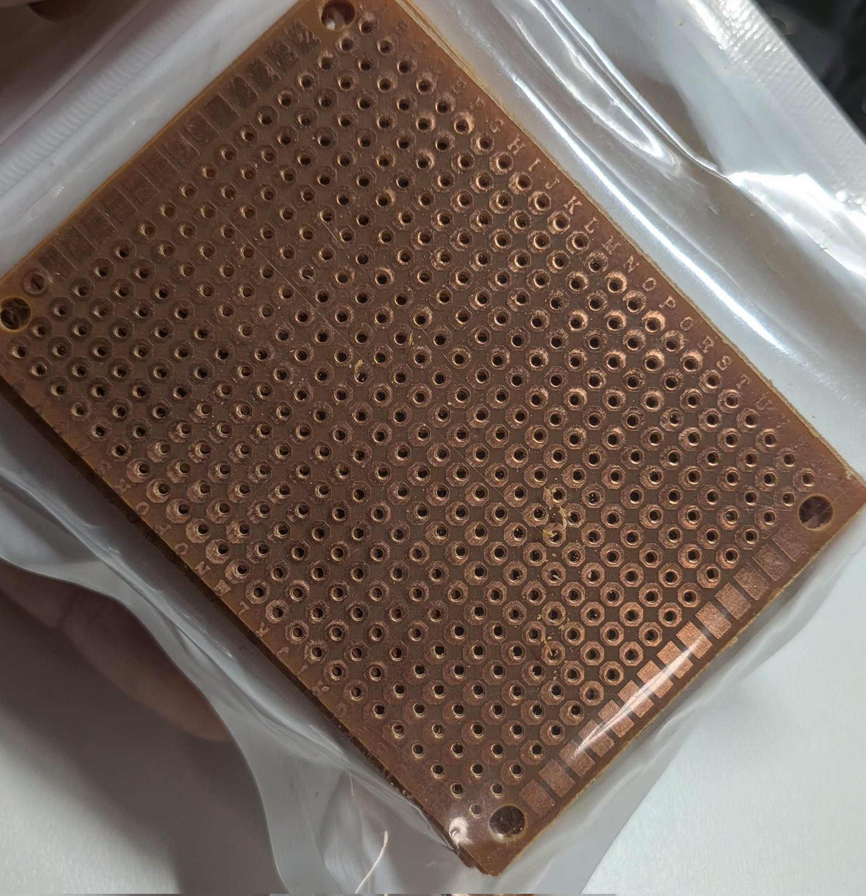
Gemini由来でパスワードのペッパー実装の脆弱性を見つけたのでClaude CodeにPoCを書いてもらいました / “Gemeniが提案した脆弱なペッパー実装に対するPoCをClaude Codeで作成・検証した - Qiita”
Gemeniが提案した脆弱なペッパー実装に対するPoCをClaude Codeで作成・検証した - Qiita
原発ルネサンス再び、3社が売上高最高 再稼働支援と32兆円米投資
原発ルネサンス再び、3社が売上高最高 再稼働支援と32兆円米投資
何だこの動きは。
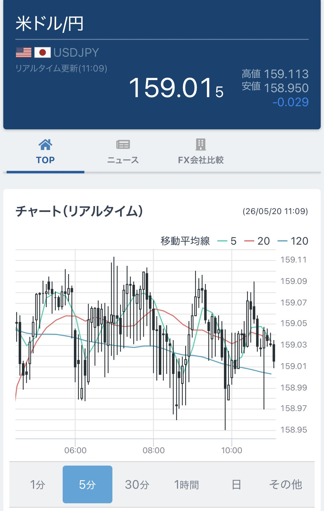
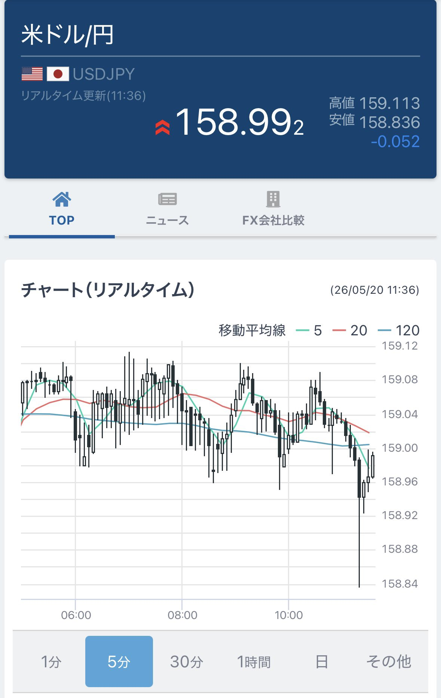
当事者の戦友会誌や研究家などの資料の上に成り立っており、大元の同人誌から大幅に手を入れました。
一応まだ終戦80周年なのと、人気ながら謎多きナウル、万博に出てなかったキリバスなど紹介しているので大阪・関西万博から横浜花博への繋ぎにもなると思います。
他では見られない！ 往時の姿をとどめる日本軍兵器が満載『艦砲と戦車の島 日本人が一生行かない島国の陸海軍戦跡 ナウル・タラワ・ポナペ』5月20日発売
日本郵便元社員を逮捕、収集委託巡り収賄容疑 「法令軽視」また発覚
日本郵便元社員を逮捕、収集委託巡り収賄容疑 「法令軽視」また発覚
トランプ氏が株握る｢くら寿司USA｣ テックで効率運営、3倍300店へ
トランプ氏が株握る｢くら寿司USA｣ テックで効率運営、3倍300店へ
今さらTuring test
Eric Topol
@EricTopol
@PNASNews が今日発表した論文：「3つの現在のAIシステムが、標準的なチューリングテストで少なくとも50%の合格率を達成」
システムはGPT-4o、LLaMa-3.1、GPT-4.5でした
すべて1～2年前のもの。
https://
pnas.org/doi/full/10.10
73/pnas.2524472123
…
笑点とプレイボーイがまさかのコラボ！ダークスーツなメンバーかっけええええ！！ #芸能・スポーツ
笑点とプレイボーイがまさかのコラボ！ダークスーツなメンバーかっけええええ！！ - オレ的ゲーム速報@刃の記事ページ
jin115.com
記事を投稿しました。 Gemeniが提案した脆弱なペッパー実装に対するPoCをClaude Codeで作成・検証した
http://
qiita.com/ockeghem/items
/804a69dcd3c6930b7676
… #Qiita
徳丸 浩
@ockeghem
Geminiから大変丁重な「お詫び」をもらったが特に嬉しくはなかった。機械らしく淡々と対応してもらったほうが良い
重ねてお礼とお詫び
香港から金密輸、数十回実行か 逮捕の男ら日本で現金に換え利益
香港から金密輸、数十回実行か 逮捕の男ら日本で現金に換え利益
診断対象のウェブアプリケーションがステータス429を返すとBurp Intruderがスロットリングにより攻撃を遅くするという挙動です。
test001
@test00000000010
間違っていたある挙動が何か教えて頂けますと幸いです。
プレスリリースが出て初の商業誌『艦砲と戦車の島』本日発売！
単純に兵器・戦史・廃墟美などでも楽しめますが、戦争報道等では"終わった過去の話"と受取がちなところ、太平洋戦争から島嶼国の現在まで歴史は地続きで繋がり我々に身近で親近感を持ってもらえる構成を目指しました
リンクはレス
湘南ペンギンさんがリポスト
沼津市西浦
セカンドインパクト起きた？
なるせひろのりさんがリポスト
Fantia、「修正・モザイク基準」の厳格化を発表、25日より実施。過去の作品も修正が必要に
https://
news.denfaminicogamer.jp/news/260520h
「関係諸機関より『一部のコンテンツにおける修正・モザイクの基準』について法的な観点から極めて厳格な指導・指摘を受けている」と説明。透過・薄いぼかし・棒線での処理は禁止に
直った
なるせひろのりさんがリポスト
旅行系ＹｏｕＴｕｂｅｒ、愛車の中でモバイルバッテリーが発火し廃車 車両保険入っておらず７５０万円「一切補償受けられず」
https://
daily.co.jp/gossip/2026/05
/20/0020376092.shtml
… #デイリースポーツ #DailySports
旅行系ＹｏｕＴｕｂｅｒ、愛車の中でモバイルバッテリーが発火し廃車 車両保険入っておらず７５０万円「一切補償受けられず」
なるせひろのりさんがリポスト
漫画家小池一夫さんの作品の著作権管理を手掛けていた（株）小池一夫作品普及会は5月14日、東京地裁から破産開始決定を受けた
負債は現在調査中
当社HPによると小池さんの「子連れ狼」や「修羅雪姫」、「オークションハウス」などの著作権を有していたとされる
▼詳細はこちら
（株）小池一夫作品普及会 | TSR速報 | 倒産・注目企業情報 | 東京商工リサーチ
なるせひろのりさんがリポスト
《お知らせ》ファンティアでのモザイク基準変更に伴い、膨大な量のモザイク修正が必要となりましたが、とても対応できないので24日までに全記事を非公開にして撤退する予定です。今後はFANBOX一本で運営していく予定ですので引き継ぎ何卒宜しくお願い致します。
iPS細胞薬、年収770万円なら負担年53万円上限 世界初の保険適用
iPS細胞薬、年収770万円なら負担年53万円上限 世界初の保険適用
ふくおかFG、半導体融資で独自審査 市況悪化時も財務余力みて判断
ふくおかFG、半導体融資で独自審査 市況悪化時も財務余力みて判断
これあまりにも良すぎて買っちゃった
物議を醸した“生成AI動画コンテスト”が正式に開催中止へ―『Party Animals』公式「ハードルの引き下げとAIの活用を誤って結びつけてしまった」と謝罪
https://
gamespark.jp/article/2026/0
5/20/166652.html?utm_source=twitter&utm_medium=social&utm_content=tweet
…
リコールを乗り越えたcheeroの回答 安全性に全振りした「準固体電池」モバイルバッテリーの使い勝手は？
リコールを乗り越えたcheeroの回答 安全性に全振りした「準固体電池」モバイルバッテリーの使い勝手は？
なるせひろのりさんがリポスト
なお 引っ越す際 いきなり契約切るとスクレイピングサイトにデータが残ってしまうので 可能であれば全ページか有料ページをダミーデータで埋めて それをスクレイピングサイトに食わせて上書きさせる……という手があります
マー憂さ晴らしですね こんな感じになります
ポン☆潤々さんがリポスト
／
5/27(水)～29(金)限定
全国の丸亀製麺でお好きなうどん「並」→「大」
お値段そのままで増量
＼
打ち立て茹でたてのうどんのおいしさをもっと感じてもらいたい。
そんな思いから「#どどんとサプライズ」はじめます
第一弾は"どどんと"麺増量無料！
この時季は冷うどんもおすすめです♪
【TBSひるおび】元体操選手・田中理恵さん 栃木強盗殺人事件の実行役・相模原バール少年団の今後を人生を心配して炎上中
【TBSひるおび】元体操選手・田中理恵さん 栃木強盗殺人事件の実行役・相模原バール少年団の今後を人生を心配して炎上中 : ハムスター速報
「ムーアの法則」超えたAI キオクシアが突きつける日本企業の未来
「ムーアの法則」超えたAI キオクシアが突きつける日本企業の未来
4人で協力し、言うことを聞かない羊の群れを導け！マルチプレイADV『Baaad Trip』―地図とコンパス頼りにガイド、誰か1人失敗で台無し
https://
gamespark.jp/article/2026/0
5/20/166651.html?utm_source=twitter&utm_medium=social&utm_content=tweet
…
自民党「ストーカー加害者にGPS装着させよう」 #政治

自民党「ストーカー加害者にGPS装着させよう」 - オレ的ゲーム速報@刃の記事ページ
jin115.com
長瀬産業、半導体現像液をリサイクル 安定供給で地政学リスク軽減
長瀬産業、半導体現像液をリサイクル 安定供給で地政学リスク軽減
XRゲーム「EVANGELION: Δ CROSS REFLECTIONS」，BitSummit PUNCHで最新PVを初公開。NERV本部の未公開エリアも収録
https://
4gamer.net/s/G094296.2605
20003
…
ゲームに関する新情報に加え，ハンドトラッキング操作やプレイ映像を公開
訪日客需要、地方がけん引 宿泊増加率は三大都市圏上回る
訪日客需要、地方がけん引 宿泊増加率は三大都市圏上回る
WoTがエージェント主体のヒーローシューターに。基本プレイ無料新作「World of Tanks: HEAT」，5月26日リリース。PC，PS5，Xbox Series X|Sのクロスプラットフォームに対応
https://
4gamer.net/s/G093797.2605
20002
…
従来のシリーズの直接的な続編ではなく，世界観やシステムを一新し，まったく新しい体験を楽しめる
今時の高校、文化祭と体育祭と分けず、部門化して一気にするんですね。
三菱商事も持て余した水ing、インフロニアが世界大手への道を開く
三菱商事も持て余した水ing、インフロニアが世界大手への道を開く
なるせひろのりさんがリポスト
深川めし弁当店「太郎」運営の(有)太郎が破産 店舗に子供たちへの手紙
https://
news.yahoo.co.jp/articles/edb45
587d637cb0cec4faedb9a482d39af7c96ae
… #深川めし #子供たちへの手紙

深川めし弁当店「太郎」運営の(有)太郎が破産 店舗に子供たちへの手紙（帝国データバンク） - Yahoo!ニュース
『Forza Horizon 6』プレイヤー数が370万人突破！発売から一夜で100万人以上増加も大人気すぎてサーバー接続問題も公式報告
https://
gamespark.jp/article/2026/0
5/20/166650.html?utm_source=twitter&utm_medium=social&utm_content=tweet
…
Steamにおける最大同時接続者数も一夜明けて記録を更新しました。Game Passで遊んでいるユーザーも多そうです。

AIが外科医を育成、視線や筋肉信号から習熟度判定 名古屋大学

AIが外科医を育成、視線や筋肉信号から習熟度判定 名古屋大学
佐々木俊尚＠新著「フラット登山 日本を歩く旅60」7月8日刊行！さんがリポスト
おはようございます飼い主2(
@sasakitoshinao
)が早朝ラジオ #cozy1242 出演後に作ったブランチは、リゾット。インディカ米にナスとネギとベーコン入り。ナスのとろみがいいのよぉ〜。 #名もなき料理
佐々木俊尚＠新著「フラット登山 日本を歩く旅60」7月8日刊行！さんがリポスト
以前は「職場」「学校」「地元」など、近場のコミュニティが出会いの中心だった。
そもそも比較対象が少なかった。
今は、毎日自分の好きなジャンルのSNSが見られる環境。
トランプ大統領、“あの企業”の株を取得したことが判明ｗｗｗｗｗｗｗｗｗ #ニュース
トランプ大統領、“あの企業”の株を取得したことが判明ｗｗｗｗｗｗｗｗｗ - オレ的ゲーム速報@刃の記事ページ
jin115.com
積水化学工業株価が安値 「ペロブスカイト太陽電池」報道に反応限定
積水化学工業株価が安値 「ペロブスカイト太陽電池」報道に反応限定
パッケージ風ボックス入りの『ドラクエ』フィギュアが素敵！おまけ付きお菓子「チョコボックス」にスライム、はぐれメタルなど12体を収録
https://
gamespark.jp/article/2026/0
5/20/166649.html?utm_source=twitter&utm_medium=social&utm_content=tweet
…
なるせひろのりさんがリポスト
【速報】広島・宮島の「霊火堂」で火災発生
並べ師ｷﾀ━━━━(ﾟ∀ﾟ)━━━━!!
時事ドットコム（時事通信ニュース）
@jijicom
偽ボンドロを販売目的で所持 容疑で男2人逮捕―愛知県警
https://
jiji.com/jc/article?k=2
026051901066&g=soc
…
偽物の「ボンボンドロップシール（ボンドロ）」を販売目的で所持したとして、愛知県警は商標法違反容疑で、会社役員（39）、個人事業主（41）を逮捕しました。認否は明らかにしていません。
教習関係なくバイク乗るなら明日は我が身。気を引き締めて乗ろう。
女性が早く良くなることを、願っています。
なるせひろのりさんがリポスト
【「消えずの火」がある霊火堂火事】
「消えずの火」がある霊火堂火事 - Yahoo!ニュース
大和証券グループ本社株価、一時１%高 欧州航空機リースに出資へ

大和証券グループ本社株価、一時1%高 欧州航空機リースに出資へ
転売ヤー対策も準備中か？ Steam Machineの予約販売は4形態になる模様

転売ヤー対策も準備中か？ Steam Machineの予約販売は4形態になる模様
Grok人気急降下。開店休業のデータセンターをAnthropicにリース
Grok人気急降下。開店休業のデータセンターをAnthropicにリース
貝さんさんさんがリポスト
家族でアニメーターって珍しいんか？
すごいウケてる(^^;;
ハナちゃんの声の人、普段はとても柔らかに話すギャプ萌え！
推しかるちゃー
@oshi_culture
⋰
大人気アニメ「黄泉のツガイ」の裏側に密着！
⋱
制作の核となる作画監督の驚きエピソードとは……？
段野ハナ役の #島袋美由利 さんも登場！
TVer：
https://
tver.jp/episodes/epm13
9dkpp
…
#岩井勇気 #狩野英孝 #えびちゅう
「クレカ乗車」はお得か 基本は交通系ICカード
「クレカ乗車」はお得か 基本は交通系ICカード
富士山目指して？自転車で走る方がかなりいらっしゃった。富士のヒルクライムは、来月だから、練習なのだろうけど、地元で住んでる方なのか。海外の方が多いけど、もしかして長期滞在？
VAIOノートで故障が約4割減少、約1,350台を導入した東急エージェンシー - PC Watch
https://
pc.watch.impress.co.jp/docs/news/2109
998.html
… 逆に今までどこのメーカー使っていたのか気になる。

VAIOノートで故障が約4割減少、約1,350台を導入した東急エージェンシー
前も似たような事例があってその時も書いたけど、バイクは構造上、体が後ろに持っていかれたらアクセル（スロットルグリップ）を開く方に手も動きます…。意図せぬ加速をしたら、怖くてもしがみつくのをやめて右手を離してください。後ろに落ちる方がダメージが少ないと思われます。

ライブドアニュース
@livedoornews
【搬送】バイク教習中に事故、女性が意識不明 福岡
https://
news.livedoor.com/article/detail
/31321004/
…
19日夕方、福岡県大野城市の自動車教習所で、バイク教習中の女性が壁に衝突し、意識不明の状態で搬送された。コースから脱輪した直後に何らかの理由でスピードが上がり、壁に衝突したという。
怖っ！

おのだ/Onoda
@onodamasashi
私の車ですがモバイルバッテリー発火で廃車となってしまいました。。
車内のドリンクホルダーにモバイルバッテリーを置いていたところ、発火していました。不幸中の幸いですが、発火時に車内には誰もおらず被害は車だけです。
皆さんもお気をつけ下さい。モバイルバッテリーの発火、本当に怖いです。
絵師さん、たった3日でフォロワー1万人超え→他の絵師が嫉妬でブチギレ「このレベルで神絵師になれるの？ｗ」→絵師が謝罪「不快な思いをさせて申し訳ありません」 #酷い話・事件

絵師さん、たった3日でフォロワー1万人超え→他の絵師が嫉妬でブチギレ「このレベルで神絵師になれるの？ｗ」→絵師が謝罪「不快な思いをさせて申し訳ありません」 - オレ的ゲーム速報@刃の記事ページ
jin115.com
1984年の架空日本から、異形蠢く世界へとサバイバルな異世界転移。トレハン系3DダンジョンRPG『デモンキルデモン ～黄泉1984～』エクスペリエンス新作まもなく登場【先行プレイレポ】
https://
gamespark.jp/article/2026/0
5/20/166648.html?utm_source=twitter&utm_medium=social&utm_content=tweet
…


三菱ふそう､サイバー攻撃対策の新型バス
https://
nikkei.com/article/DGXZQO
UC1996L0Z10C26A5000000/?n_cid=SNSTW005&n_tw=1779198284
…
大型路線バスと小型マイクロバスの新型モデルを発売。電子制御システムが不正アクセスされたり改ざんされたりするリスクを抑える対策を導入しました。

三菱ふそう､サイバー攻撃対策の新型バス 大型も小型も
Amazon：壽屋(KOTOBUKIYA) 薬屋のひとりごと OSHI WORKS 猫猫 ノンスケール PVC製 塗装済み完成品 フィギュア 予約受付開始！
壽屋(KOTOBUKIYA) 薬屋のひとりごと OSHI WORKS 猫猫 ノンスケール PVC製 塗装済み完成品 フィギュア
関宮さんがリポスト
「連動可動が生み出す“プロ仕様”モデル、起動！」
ガンダムアーティファクトが全高約100㎜のサイズでプラと合金素材で構成された可動キットとなって新登場。
Amazon：壽屋(KOTOBUKIYA) 薬屋のひとりごと OSHI WORKS 壬氏 ノンスケール PVC製 塗装済み完成品 フィギュア 予約受付開始！

壽屋(KOTOBUKIYA) 薬屋のひとりごと OSHI WORKS 壬氏 ノンスケール PVC製 塗装済み完成品 フィギュア
Amazon：ミートス (Myethos) アズールレーン フォーミダブル アニバーサリー・メモリーズVer. 1/7スケール プラスチック製 塗装済み 完成品 フィギュア 予約受付開始！
ミートス (Myethos) アズールレーン フォーミダブル アニバーサリー・メモリーズVer. 1/7スケール プラスチック製 塗装済み 完成品 フィギュア
Amazon：ミートス (Myethos) Gift＋ アズールレーン トリニダード ドレッシング・トラッパーVer. 1/8スケール プラスチック製 塗装済み 完成品 フィギュア 予約受付開始！
ミートス (Myethos) Gift＋ アズールレーン トリニダード ドレッシング・トラッパーVer. 1/8スケール プラスチック製 塗装済み 完成品 フィギュア
Haruhiko Okumuraさんがリポスト
grepでいいんじゃね論文、ハーネス周りの議論はまあそうだなって内容だけど、比較対象の意味検索が単純な類似検索だけを想定していて、いや大手はどこもそんな使い方してないし。これ系のagentic
Recent advances in Large Language Model (LLM) agents have enabled complex agentic workflows where models autonomously retrieve information, call tools, and reason over large corpora to complete...
arxiv.org
テスラさんがリポスト
３０年以上前のOVAだと思うけど
探偵が幼子を捜査する、その幼子はうらぶれた男と暮らしていて、飛行機を見て「おさかな！」と叫ぶ。時折発見されるジュラルミンの鱗・・・みたいな
タイトルが思い出せない、あれは何だったんだろう、誰か教えて
#自分しか知らないと思うアニメ挙げてけ
佐々木俊尚＠新著「フラット登山 日本を歩く旅60」7月8日刊行！さんがリポスト
5/２０水 #cozy1242 プレイバック！
佐々木俊尚
@sasakitoshinao
radiko タイムフリーでお聴きください！
▼経済安保推進法が衆議院通過、
▼韓首脳会談 エネルギー協力の拡大と安保関係の強化で合意
https://
radiko.jp/share/?sid=LFR
&t=20260520071053
…
明日のコメンテーターは
飯田泰之
@iida_yasuyuki
月曜日～金曜日の6時から8時まで生放送！ニッポンと世界の今が分かる朝のニュース番組『飯田浩司のOK! Cozy up!』。ニュースにどんな背景があり、私たちの生活にどんな影響があるのか？多彩なコメンテー
radiko.jp
さすがにOpenAIのCodexで作った画像はOpenAIの検出器でSynthIDを検出した。Geminiでは検出せず。同じSynthIDと名乗っても中身が違うのか
とりあえず有線LANは無しにして、セール中だからこれ買うかな？＞Amazon
セール: UGREEN 7 in 1 Revodok Pro USB C ドッキングステーション 2*HDMI出力 USB Cハブ 4K@60Hz HDMI 出力 2*USB A&C...
フジクラ、米に最大2600億円投資 データセンター向け光ファイバー増産

フジクラ、米に最大2600億円投資 データセンター向け光ファイバー増産
深津 貴之 / THE GUILD, noteさんがリポスト
お陰様で売れておるみたいです。
なんとか25000部を目指したいので、みなさん、よろしくお願いいたします！
尾原＠メタスキル発即三刷2.4万部！
@kazobara
新著メタスキル好調！発売即
8000部増刷、24000部突破！
AIが努力を無効化する時代の、働き方、生き方の長期生存戦略（深津さん、けんすうのプロンプトダウンロード可能だよ！）
リンクは次ポストから
皆さんからの感想、実践後の変化のポストめちゃくちゃ楽しんでます！！
@fladdict
@kensuu
民事裁判、21日から「全面IT化」 提訴や手数料納付もオンラインで

民事裁判、21日から「全面IT化」 提訴や手数料納付もオンラインで
Windowsだと文字化けするのか＞Antigravity
山田胡瓜・漫画家
@kyuukanba
AntigravityだいぶUI変わったな。いい感じそう。
日本語UIにも対応してほしい&日本語ファイル名化けちゃうのでGoogleの中の人よろしくお願いします！
Vtuberオタク「ホロライブの『らでん』ちゃんが国宝を解説してる！すごい！」→学術系Vtuberがブチギレ「個人勢が伸びないことにいたたまれない」→物議に #VTuber

Vtuberオタク「ホロライブの『らでん』ちゃんが国宝を解説してる！すごい！」→学術系Vtuberがブチギレ「個人勢が伸びないことにいたたまれない」→物議に - オレ的ゲーム速報@刃の記事ページ
jin115.com
貝さんさんさんがリポスト
京アニの作監さんや動画さんのスピードの速さを見た時も驚いたけど、すごいですね。
そして、毛先からペン入れ、というのは知識としては知っていたけど実際に見るのは初めて。

りにあ・かたや Linnea
@KeikoKup
「漫画家って本当にどれくらいの速さでインク入れできるの？？」
リクエストがたくさん来たので、ここに私のマンガのインク入れをリアルタイムでお届けします！ 予想より遅い？それとも速い？
個人的には私のスピードは結構平均的だと思うけど、他の人のインク入れをあまり見ないからよくわからない
栃木強盗殺人事件の指示役・竹前美結のSNSダンス動画 見つかる
栃木強盗殺人事件の指示役・竹前美結のSNSダンス動画 見つかる : ハムスター速報
「Cc:は個人情報漏洩」という誤解？
あい｜前に進める秘書
@piyohisyolog
メールのCC抜いて返信してくる人ってなんで抜くの？意図あって入れてんのに。
日経平均株価が一時6万円下回る 1000円超下落、金利上昇に警戒感
日経平均株価が一時6万円下回る 1000円超下落、金利上昇に警戒感
日経平均株価、一時6万円下回る 小幅反発で始まるも買い続かず

日経平均株価、一時6万円下回る 小幅反発で始まるも買い続かず
でなー

輿水畏子さんがリポスト
#WIPㅤㅤㅤ
初めて脚環を見ました 研究中のエマ
なるせひろのりさんがリポスト
自分がFANBOXではなくファンティアだったのは、運営がとらのあなだったから。
とらのあなは当時人間扱いされてなかった同人作家を、始めて敬語使ってくれた会社（これがマジなんですよ。90年代の同人ショップは同人作家は業者扱いだったんです）
そして、人生のヤバい時に何度も救ってくれた。
はるきゲにあ_雷神会_
@harukige
もしも、私が ファンティアをやっていたら
同人誌の掲載でコンテンツが１００を超える可能性が
ある。
一作３０pとして ３０００ページ
これを5日でやろうとすると
3000÷５で 一日に ６００ページ
5日寝ずにやって 一時間２５頁
一分で 2枚半のページの修正をやり直す計算
頃す気か？
米消費関連、吹き荒れた物価高の逆風 光明は「成長戦略」
米消費関連、吹き荒れた物価高の逆風 光明は「成長戦略」
当直の先生にコーヒーOKの許可を得て、コンビニで買って飲んでたら、主治医の先生が来て、「負荷試験に影響出るんで今後は控えてください」と言われ、朝令暮改。

軍手 #軍手のシン・ガザツ旅 公開中!!
@gunziotaku
おはようございます。素敵な朝食(病院食)です。 x.com/gunziotaku/sta…
海外フォーラムで『名越スタジオ』がGoogleマップ上で「閉業」と表示されていると知り、確認してみたところ、本当に閉業扱いになっていた。
正式な発表も出ていないのに、なぜ「閉業」と付けられているのだろうか?

貝さんさんさんがリポスト
アニメの門DUO、次回は数土さんがゲストです。
各社決算が出てきていますが、どんどん業績伸ばしていたここ数年から一転、赤字・減益という文字も目に付くように。成長痛なのか、それとも……？ 深掘りします。
YouTube・ニコ生でのライブ配信です。
海外、疑問「なんで日本の若い女性は東京へ行くの？なんで地方を捨てるの？」 #雑談・その他の話

海外、疑問「なんで日本の若い女性は東京へ行くの？なんで地方を捨てるの？」 - オレ的ゲーム速報@刃の記事ページ
jin115.com
習近平氏「プーチン氏はウクライナ侵略をいずれ後悔」 FT報道
https://
nikkei.com/article/DGXZQO
CB193RF0Z10C26A5000000/?n_cid=SNSTW005&n_tw=1779196700
…
FTによると習氏はプーチン氏やロシアのウクライナ侵略に明確な評価を示してきませんでした。
トランプ氏との会談の発言は「過去より踏み込んだものだった」といいます。

習近平氏「プーチン氏はウクライナ侵略をいずれ後悔」 FT報道
スマホ連携＆ハイブリッドでリーズナブル。最強のインド版ヤマハ125cc

スマホ連携＆ハイブリッドでリーズナブル。最強のインド版ヤマハ125cc
Googleカレンダーに「10年ごと5月19日」という予定が入っているの、エモみがある
サブウェイの注文方法 難しくて草

サブウェイの注文方法 難しくて草 : ハムスター速報
十年砂時計という、砂が落ち切るのに十年かかるアプリがあります。1996年5月19日から開始して、昨日2026年5月19日に3ターン目が終了しました。
次は2036年5月19日です。それでは10年後に、また。
Verify OpenAI-generated images
https://
openai.com/research/verif
y/
…
これにGeminiで作った画像を入れてみた。ファイル名がGemini_Generated_Image_*.pngなのにC2PAでOpenAIの画像だと判定。SynthIDは検出できず
Google、音声操作のAI眼鏡 26年秋投入でメタに対抗
Google、音声操作のAI眼鏡 26年秋投入でメタに対抗
特別室ではテレビ見放題、バストイレ付なんですけど、ソファーとかはない。
おはようございます。素敵な朝食(病院食)です。
軍手 #軍手のシン・ガザツ旅 公開中!!
@gunziotaku
とても素敵な1泊5万円の特別室に通されました(入院です
Haruhiko Okumuraさんがリポスト
先日のテレビ取材:
「◯◯が今回のテーマなんです。それを示すデータを見せてください」
「データから考えると◯◯とは言えないです」
「そうですか，使わないかも知れません」
結局，番組には使われませんでした。こういう結論ありきの番組制作は，結局は信用を失うと思います。
知人の兄、10年ぐらいニートしてたのが最近バイトを始めたって聞いて、祝福の気持ちがわいた瞬間に「彼女できたからね！結婚したいんだって！」って言われて、「愛の力だ！」って感嘆と共に、「なんかあんまり祝福できない気持ちがあるな…」ってなる心の狭い独身おじさん。
VTuber「家族の荒れ具合が凄く、配信活動が困難になっています。お休みさせてください」→衝撃の画像が投稿される・・・ #VTuber

VTuber「家族の荒れ具合が凄く、配信活動が困難になっています。お休みさせてください」→衝撃の画像が投稿される・・・ - オレ的ゲーム速報@刃の記事ページ
jin115.com
ほんとそれ、騒ぐだけ騒いでどうにもならないとなると逃げる。某公園の劣化した設備を撤去するというときの騒ぎでも見た。なんで議員がいるのに議会にかけられるまで動かなかったんだろうとも思ったり。これはわざと見てみないフリしてただろ？と。
矢川才疎
@dubious_sources
小汚い左翼が共産党系の弁護士かなんか連れて来て、「こうしたらうまくいきますよ」と振付けた通りに外国人が踊った結果、さっさと帰国しておけば再入国だって出来たし、ましてや死ななくて済んだのが酷い末路を迎える。すべて左翼のせい。でも左翼は責任を取らない。女子高生を溺死させても知らんぷり
【聖地巡礼】anemoi / key in 初山別村 編
https://
youtu.be/QmM2T3eAfhw?si
=WQpVCRLaaDQ8OaMv
…
@YouTube
より
また、聖地巡礼で初山別村へ遠征して来ました。

anemoi / key しょさんべつ天文台です。今作は、ふむゆん先生原案の 淡雪陽彩 ちゃん推しです。2026年5月16日撮...
youtube.com
米中首脳、AI対話開始で合意 中国外務省「発展促進を」
米中首脳、AI対話開始で合意 中国外務省「発展促進を」
ご飯を冷凍するときは、真ん中にくぼみをつけると電子レンジにかけるとき均一に解凍されやすい。なるほどーハンバーグ焼くときと同じ要領ですね。↓

冷凍ごはんをチンしても「どこかは冷たい……」→ガッカリが激減するウラ技 簡単すぎ「明日からやる」「これで均一温め！」｜まいどなニュース

冷凍ごはんをチンしても「どこかは冷たい……」→ガッカリが激減するウラ技 簡単すぎ「明日からやる」「これで均一温め！」｜まいどなニュース
富士見口五合目。売店があると見たけど、取り壊されてるみたいでした。

16歳少年が20カ所刺す凄惨､｢栃木強盗殺人｣が映す現代の犯罪像…闇バイトで進む｢犯罪者の素人化｣
16歳少年が20カ所刺す凄惨､｢栃木強盗殺人｣が映す現代の犯罪像…闇バイトで進む｢犯罪者の素人化｣
16歳の少年が60代女性をめった刺しにした栃木の強殺事件。なぜそこまで……と思ったけど、犯罪心理学者の方のこの解説。「全国の少年鑑別所で多くの非行少年の心理分析を行いましたが、少年の場合、特に集団で暴力行為を行う場合、エスカレートする傾向が顕著に認められます。まだ未成年で刺激に対する
なるせひろのりさんがリポスト
fantiaの件は、
「違反者は警察に通報」っていう強い言葉が全てを説明してくれてる気がする。
なるせひろのりさんがリポスト
もう、おせーわ
マムダニ、ウォール街に土下座外交ーーNYから出て行かないでと懇願。
「富裕層から搾り取れ」と叫んでいた男が、今度はJPモルガンのダイモンCEO、ゴールドマン・サックスのソロモンCEO、ブラックストーンのグレイ社長と次々に個別面談。

TotalNewsWorld
@turningpointjpn
マムダニ、プライバシー無視！富裕層の個人宅前で「増税宣言」に批判殺到
→マムダニが億万長者ケン・グリフィンの自宅前に立ち、富裕層への増税を宣言する動画を撮影。
→これに激怒したグリフィンは、ニューヨークでの6000億円規模の開発計画撤回を宣言した。 x.com/turningpointjp…
SNSの時代になってこの15年、人と人のつながりかたはまるで「うねり」のように変わったというのが実感。Voicyで語りました。↓
人間関係は海のうねりのように | 佐々木俊尚「毎朝の思考」/ Voicy - 音声プラットフォーム
人間関係は海のうねりのように | 佐々木俊尚「毎朝の思考」/ Voicy - 音声プラットフォーム
京浜東北線､｢快速運転中止｣して昼間に工事の狙い ｢夜間作業｣から日中にシフト､都市部でも進むか

京浜東北線､｢快速運転中止｣して昼間に工事の狙い ｢夜間作業｣から日中にシフト､都市部でも進むか
ここにも人手不足の影が。JR東日本が、以前は夜間におこなっていた鉄道設備のメンテナンスを昼間におこなうように。「人手不足が深刻化する中、夜間作業が中心の鉄道工事は労働環境の面で、作業員の確保と維持が難しくなっている」↓

かつての雑誌編集者のような役割を、AIエージェントが担いつつある。この先にメディアはどう変わるか。有料メルマガで解説しています。↓
AIが「編集者」になっていく世界でメディア空間はどう変わるか〜〜人間社会とAIが融合していく未来を考える（６） 佐々木俊尚の未来地図レポート Vol.909｜佐々木俊尚
https://
buff.ly/mDylr88
米市場、アンソロピックの収益に楽観 ＡＩトークン経済性向上カギ

米市場、アンソロピックの収益に楽観 AIトークン経済性向上カギ
感情論に持っていきやすい左翼系が後ろにちらつくんだよなぁ。こういうのが新聞記事になるときは、まず最初は東京新聞というのもお約束。
荒井禎雄（専業主夫を志望するフリーライター）
@oharan
「かわいそうなカレー屋さん」が名義貸し疑惑で自業自得だったり、ウィシュマさんが謎の言動を繰り返した挙句に亡くなったり、こういう事例が積み重なる度に思うことがあるんだけど
「外国人にわざと間違った立ち回りを教え込んで、揉めさせて、仲介の立場で汁を吸ってるヤカラがいねえか？」
一部のレンタカー会社では、まだマイナ運転免許証に未対応のところがあるという話。いずれシステム改修で改善されると思うけど、やはりマイナとの一体化をしちゃうのは時期尚早かも。次の更新でも二枚持ちにしておくかー。↓
「マイナ免許証一本にしたらレンタカー借りれんくなったぞ」一部のレンタカー会社ではマイナ免許証に対応していないことが発覚「旅行でレンタカーを利用する時には確認を」

「マイナ免許証一本にしたらレンタカー借りれんくなったぞ」一部のレンタカー会社ではマイナ免許証に対応していないことが発覚「旅行でレンタカーを利用する時には確認を」
Marp軽くていいですよ
takeda
@Chem_LaTeX
beamer on LuaLaTeX、重すぎて草
出先だからcloud latexなのと\onslide使いまくってるのはあるが、にしても1分30秒超えはつらい
死亡した船長ということは、生きてる船長にはこれ以上のなにかがありそうだ。それを立件するのがいつになるのか気になるところ。個人的には運輸安全委員会の報告書が見たいが、あれは数ヶ月で出るものではないからなぁ。おそらく事故発生から１年ぐらいかかるだろう。
産経ニュース
@Sankei_news
辺野古転覆事故、国交省が死亡した抗議船船長を海保に刑事告発へ 事業無登録
https://
sankei.com/article/202605
19-VOFPXAWXGJJ2RD7KEA4VDK2HFY/
…
海上運送法では、他人の要望に応じて人を運ぶ場合、転覆した2隻のような小型の「非旅客船」であっても「内航一般不定期航路事業」に該当し、国への登録が義務付けられている。
不況が続く書店業界で、神保町や秋葉原、高田馬場に店舗を持つ書泉が久しぶりに黒字化。イベントを重視し、イベントに連動して「書泉でしか替えない商品」の開発などを活発に行ってきた成果だそうです。「書店のスタッフには、特定のジャンルについて深い知識を持っていたり、独自にポップを作って売り
老舗書店の書泉が6年振りに黒字転換 「誰に売るか」を極める大改革

老舗書店の書泉が6年振りに黒字転換 「誰に売るか」を極める大改革
暗記のコツは「息を吐いている後半」に覚えること？ 思い出す時も同じ呼吸タイミング 兵庫医科大などが研究発表
暗記のコツは「息を吐いている後半」に覚えること？ 思い出す時も同じ呼吸タイミング 兵庫医科大などが研究発表
オタク起床
KIRIMIちゃん.に投票したよ☆
がんばるみんなにエールを！Smiling Ovation!
#サンリオキャラクター大賞 #キャラ大

KIRIMIちゃん.に投票したよ | 2026年サンリオキャラクター大賞 公式サイト
結婚とSNSが反比例という研究。「現実世界で同年代の人たちと多くの時間を過ごすと、将来のパートナーに対するあなたの基準は現実世界に根ざしたものになる。一方でInstagramに時間を費やすと、あなたの基準は人工的な『普通』という感覚に根ざしてしまう」「つまり、SNSによって恋愛相手に求める基準
世界中で急激に出生率が減少しているのは「スマホとSNS」のせいかもしれない

日本では2025年の合計特殊出生率(15～49歳の女性が一生のうちに産む子どもの平均数)が過去最低の「1.13」前後になる見通しであり、移民なしで人口を維持できる「2.1」を大きく下回っています。少子化が問題になっているのは日本などの先進国だけでなく、発展途上国でも深刻化しているとのこと。経済紙のフィナンシャル・タイムズは世界的な出生率低下の理由が、「スマートフォンとSNS」にあるのではない...
gigazine.net
「ほっかほっか亭」のハークスレイ、ハークスレイホールディングスに社名変更 7月1日から
「ほっかほっか亭」のハークスレイ、ハークスレイホールディングスに社名変更 7月1日から
積極財政の意味あいについてわかりやすい解説。「世界的には政府の成長投資の拡大余地を残すために財政収支を一定の赤字に収めようとする柔軟性が大事になっているのに、先進国でプライマリーバランスの黒字化目標という硬直化した財政運営をしているのは日本だけです」と会田卓司さん。↓
やっぱり国は税金を取りすぎている…消費税減税を拒否して5兆円を余分に搾り取る財務省の"矛盾"の代償（プレジデントオンライン） - Yahoo!ニュース

やっぱり国は税金を取りすぎている…消費税減税を拒否して5兆円を余分に搾り取る財務省の"矛盾"の代償（プレジデントオンライン） - Yahoo!ニュース
おはようございます。
50歳おっさん「ヒッチハイクで日本縦断します！車に乗せてくれる方募集します！あ、でも条件は○○でお願いします！」→内容がツッコミどころしかないと話題にｗｗｗｗ #雑談・その他の話

50歳おっさん「ヒッチハイクで日本縦断します！車に乗せてくれる方募集します！あ、でも条件は○○でお願いします！」→内容がツッコミどころしかないと話題にｗｗｗｗ - オレ的ゲーム速報@刃の記事ページ
jin115.com
スライムパンは こんらん している！
スライムみたいな青いパン→切ってみると…… 「思ってたのと違う」“衝撃の断面”が651万再生「疲れが吹っ飛んだ」
（記事URLはリプから）
スライムみたいな青いパン→切ってみると…… 「思ってたのと違う」“衝撃の断面”が651万再生「疲れが吹っ飛んだ」（1/3） | グルメ ねとらぼ
▽「OnyXXX」MV

【Music】Vocal：Black onyX [帝アキラ(cv.入野自由) 駒沢雷(cv.内田雄馬) 駒沢乃依(cv.松岡禎丞)]...
youtube.com

ポン☆潤々さんがリポスト
SHINEシャインマスカット キャンペーン
シャインマスカットの甘さと香りを阿里山ウーロンがすっきり引き出す
毎日名様に
『SHINEシャインマスカット』の
ドリンクTicketを
フォロー&リポストで応募
※当選者のみDMで自動送信
※この投稿は5/21 7:59まで

なんかわけわからんことが多い
Financial Times
@FT
Google DeepMindのデミス・ハサビスが初期のAnthropic投資家として浮上
https://
ft.trib.al/v5jzNKe
生成かどうか見分けるSynthIDは業界スタンダードになりつつある。編集履歴を参照できるC2PAにも対応。大事。

GoogleのマルチメディアAIが便利そう。
どんな入力＝文字・音声・画像・動画からも、画像や動画を生成できるし編集もできる。
ゆいレールが止まる不発弾処理となると扱いが大きいね…。#アップ738
日本経済新聞 電子版（日経電子版）さんがリポスト
ペロブスカイト太陽電池普及へ業界団体設立 まずメーカー５社

ペロブスカイト太陽電池普及へ業界団体設立 まずメーカー5社
TDK、マレーシアの新興中型電池メーカーを買収 380億円で全株取得
TDK、マレーシアの新興中型電池メーカーを買収 380億円で全株取得
お大事に。てへぺろ☆とネタにできないやつだ。
ライブドアニュース
@livedoornews
【お大事に】声優・日笠陽子、転倒し右腕骨折 生放送で報告「やばいよね」
https://
news.livedoor.com/article/detail
/31319241/
…
「折れたてだから。一昨日」と報告。「裾がめっちゃヒラヒラしているズボンを履いていたんだけど、裾に引っかかって転んで。しかも2回も転んで同じところを強打するという…」と打ち明けた。
投資を爆増したおかげや！
Geminiが爆速！
右上のTPSに注目（Tokens Per Second＝秒速トークン）

ダイハツは大阪発動機だからOMWと言ってるのも目にしたことあるぞw
秋おん
@chibaibaraki
BMWってバイエルン発動機製造株式会社だからバイハツ…
Googleドキュメントが進化、
文章を書く→文章を話す時代へ。
文章を声で編集できるし、表を入れてと言えばGoogleドライブのデータを元に入れてくれる。

読まれた。 #アップ738
MICHEE-N（ミッチー・Ｎ）さんがリポスト
明日、5月21日（木）
浦添市で
不発弾処理に伴う交通規制が行われます
ゆいレールの運休や
バスの運行経路の変更など
詳しくは浦添市HPをチェックしてください
⇩浦添市HP
https://
city.urasoe.lg.jp/doc/2026042400
057/
…
#アップ738
浦添市前田635付近（ゆいレール浦添前田駅から南西約300m）で発見された不発弾１発（米国製250kg爆弾）の安全化処理作業を以下の通り実施します。 処理作業中は、立入制限や交通規制を行うほか、交通機関に影響を及ぼすなど、ご不便とご...
city.urasoe.lg.jp
中古車｢ガリバー｣のIDOM､初の商業施設 28年度に山梨で

中古車｢ガリバー｣のIDOM､初の商業施設 28年度に山梨で
今年のApple Watchは超マイナーアプデ？ 期待できるのはバッテリー向上くらい

今年のApple Watchは超マイナーアプデ？ 期待できるのはバッテリー向上くらい
日経平均株価、米株下落が重荷 金利上昇に警戒感（先読み株式相場）

日経平均株価、米株下落が重荷 金利上昇に警戒感（先読み株式相場）
日本経済新聞 電子版（日経電子版）さんがリポスト
どうなる「Pay」、撤退･参入･再編相次ぐ 最大手PayPayは地歩固める
どうなる「Pay」、撤退･参入･再編相次ぐ 最大手PayPayは地歩固める
アストロスケールが306億円調達 防衛受注に投資、スカパーと提携

アストロスケールが306億円調達 防衛受注に投資、スカパーと提携
あいさつはいい
ソウルはいつ取れる！？
https://
x.com/don_mai_don_ma
i/status/2056672297319338482/video/1
…

金利上昇
米金利上昇が強まっているのがNY市場でも話題です。高PERのテック株が売られやすくなるなど、株価にも主にとして意識されています。日本時間あす未明にはNVIDIAの決算も控えています
note【朝メモ】
https://
note.com/goto_finance/n
/n9eb9a246cf85
…

日本経済新聞 電子版（日経電子版）さんがリポスト
フジクラ、米に最大2600億円投資 データセンター向け光ファイバー増産
フジクラ、米に最大2600億円投資 データセンター向け光ファイバー増産
日本経済新聞 電子版（日経電子版）さんがリポスト
マンション修繕不正、住人になりすまし利益誘導 渦中の社長に直撃

マンション修繕不正、住人になりすまし利益誘導 渦中の社長に直撃
これはその技術者を呼び戻さないとダメなやつだ。 もしかしたら、もうあっちに旅立ってるかもしれないがw
木村岳史(東葛人)×極言暴論
@toukatsujin
大手製造業のCIOから工場のレガシーシステムの話を聞いた。「COBOLなら、まだいいんだよ」「では、PL/Iですか」「いや」「ならアセンブリ」「それなら、どんなによかったか」「では何ですか」「うちの技術者が独自開発したプログラミング言語で書かれている」。まさにザ・レガシー。システム刷新は地獄
Amazon無在庫転売 無料で品物が貰えると話題に
Amazon無在庫転売 無料で品物が貰えると話題に : ハムスター速報
４年でそのくらいしか値段が落ちないなら中古ではなく新車でいいかとなりそう。 #アップ738
日本経済新聞 電子版（日経電子版）さんがリポスト
社長も部長も「さん付け」浸透 年齢や性差超え、フラットな組織へ
社長も部長も「さん付け」浸透 年齢や性差超え、フラットな組織へ
腹減った。。
今日はドック
ヘリウム不足の中ＭＲＩ使ってすみません（）
夢破れたアヒルの劇場再建リズムゲームADV『Mirth Island』日本語対応で2026年内発売決定―住民との交流で挫折から立ち直っていく、多彩な音ゲーと結びついた心温まる物語
https://
gamespark.jp/article/2026/0
5/20/166647.html?utm_source=twitter&utm_medium=social&utm_content=tweet
…
SteamだけでなくPS5/Xbox Series X|S/スイッチでも発売予定。
@SOEDESCO
https://
x.com/i/status/20566
62394169180660/video/1
…
Andrej KarpathyがAnthropicにどうなっちゃったんだ
Andrej Karpathy
@karpathy
個人的なアップデート：Anthropicに参加しました。LLMの最前線でのこれからの数年間は特に形成的なものになると思います。ここでのチームに加わり、R&Dに戻れることに非常にワクワクしています。教育に対する深い情熱は変わらず、時間を見てその仕事に再開する予定です。
「ミュトスリスク」で狂った銀行の成長戦略 AI投資は攻めより守りに
「ミュトスリスク」で狂った銀行の成長戦略 AI投資は攻めより守りに
OpenAIもSynthID
OpenAI
@OpenAI
AI生成画像を識別し、その出所を理解するための新しい方法を追加しています。
C2PAコンテンツ認証情報に加えて、画像には現在SynthID透かしも含まれており、OpenAI製品によって作成されたかどうかを確認するための公開検証ツールを使用して識別できます。
https://
openai.com/index/advancin
g-content-provenance/
…
Antigravityアップデート
ぬこぬこ / NUKO
@nukonuko
Gemini CLI が Antigravity CLI に統合
Antigravity CLI は Go で開発、Gemini CLI の Agent Skills、Hooks、Subagents、Extensions などを維持しつつ、高速に動作、非同期ワークフロー、ユニファイドアーキテクチャなど改善。Gemini CLI は 6 月 18 日に終了。
https://
developers.googleblog.com/an-important-u
pdate-transitioning-gemini-cli-to-antigravity-cli/
…
辺野古の問題、色々とありすぎて知事選への影響どころか、知事選の投票行動の判断材料になるところまで来ちゃってるような。争点になるかというと疑問だが。 #アップ738
党首討論、物価高・ナフサ対策が論点 きょう午後3時からライブ中継
党首討論、物価高・ナフサ対策が論点 きょう午後3時からライブ中継
Google、パーソナルAIエージェント「Gemini Spark」発表――デバイスを閉じても自律で働く
Google、パーソナルAIエージェント「Gemini Spark」発表——デバイスを閉じても自律で働く
一般ユーザー層には、コレが一番ゴツいインパクトありそう
深津 貴之 / THE GUILD, note
@fladdict
ASK YOUTUBE、ユーチューブのサイトに何でも質問できるようになる。動画全体から調べて何でも教えてくれるぽい？
初手からゴツいの来たな。
#GoogleIO
おぎのやって杉並に工場あるんだ…。イベントで届くやつは群馬から持ってきてるとばかり思ってた。
https://
oginoya.co.jp/wp/pdf/release
20260519.pdf
…
４台分www

マタタビ
@Bike_675250
昔バイク停めようと思ったらキモいのいたから止めてある分全部かけてあげた事あるよ x.com/gatchan_desu/s…
デザインが Codex App と瓜二つ過ぎてだなあ………

Mark Kretschmann
@mark_k
Google Antigravity 2.0は興味深い。なぜなら、もはや「GoogleがAI IDEを作った」感じがしなくなったからです。
Antigravity
Amazonタイムセール：Lexar SDカード Professional 1800x SDXCカード 最大読込280MB/秒 書込205MB/秒 UHS-II Class 10 U3 V60 4K Ultra HD 動画撮影 国内正規品 (256GB) LSD1800256G-BNNNG 30％OFFの14,200円！

セール: Lexar SDカード Professional 1800x SDXCカード 最大読込280MB/秒 書込205MB/秒 UHS-II Class 10 U3 V60 4K Ultra...
GPT-5.5より高いの終わってんだろ
VraserX e/acc
@VraserX
Gemini 3.5 Flash は本当に印象的だ。
でも、GPT 5.5 にはまだまだ及ばない。
GPT 5.5 ミディアムですら、知能ではそれを上回り、しかも運用コストが安い。
OpenAI が今週木曜日に GPT 5.6 をリリースするとは思えない。
彼らはまだ余裕でリードしている。
山形大学
https://
ftp.yz.yamagata-u.ac.jp 証明書の期限切れ
自民党・村上誠一郎氏「高市首相を支える会？あんな大政翼賛会みたいな会をやる必要があるのか。なんで俺がそんなものに入らなきゃいけないの？？」 #政治
自民党・村上誠一郎氏「高市首相を支える会？あんな大政翼賛会みたいな会をやる必要があるのか。なんで俺がそんなものに入らなきゃいけないの？？」 - オレ的ゲーム速報@刃の記事ページ
jin115.com
なぜか真夏でも涼しい勝浦

だじゅうる＠マスコットブログ
@dajudajudaju
#とある市 その465
人口1.5万
日本経済新聞 電子版（日経電子版）さんがリポスト
JR東日本と西武、28年度から直通運転 舞浜―秩父など観光特急
https://
nikkei.com/article/DGXZQO
UC183VM0Y6A510C2000000/?n_cid=SNSTW005&n_tw=1779191003
…
両社の鉄道の乗り入れは初めてです。
JR沿線の東京ディズニーリゾートなどの観光地と、西武の所沢以北を結ぶなどして観光需要を掘り起こす狙いです。

都会のジャングルを血に染めるケモノ系アクションシューター『Kusan: オオカミの街』発売日決定！
プレイヤーは熟練の元兵士である傭兵ジンとなり、強力で制御不能な力を持つ謎の少女を救うべく戦いに挑みます。
https://
gamespark.jp/article/2026/0
5/20/166646.html?utm_source=twitter&utm_medium=social&utm_content=tweet
…
空き瓶から宝石を作る神業
捨てる予定だったお酒の空き瓶→割って、磨いて、加工すると…… 生まれ変わった姿に「宝石よりも価値がある」
（記事URLはリプから）

捨てる予定だったお酒の空き瓶→割って、磨いて、加工すると…… 生まれ変わった姿に「宝石よりも価値がある」「神業ですね」（1/2） | ねとらぼ
ブラックジャックで勝ち進み地獄からの脱出を目指す「Black Jacket」（ほぼ日 インディーPick Up！）
https://
4gamer.net/s/G095079.2605
17001
…
「21を超えずに21に近づける」というシンプルなルールをベースに，スート選び・カードの覚醒・コインを削っての心理戦までを重ねた一作だ。

量子もつれチョコレート。片方が甘くて、片方が辛いらしい。
#GoogleIO
首都圏の新築分譲戸建てが初の平均5000万円超え 25年民間調べ
https://
nikkei.com/article/DGXZQO
UC195W90Z10C26A5000000/?n_cid=SNSTW005&n_tw=1779194551
…
地域別では東京23区の平均は8287万円と、調査開始から初めて8000万円を超えました。
平均ローン借入総額も過去最高を更新しています。
首都圏の新築分譲戸建てが初の平均5000万円超え 25年民間調べ
うみゆき@AI研究さんがリポスト
Google I/Oで個人的にすげえと思ったのは、これ。Universal Cart。
どういうのかというと、
・Gemini や YouTube を見ているときに、商品をカートに追加できる
・いろいろなお店の商品でも、1つのカートで決済ができる
Universal Cart などショッピングをサポートする新たな機能の紹介
メタ、「スマホの次」へ日本でAI眼鏡
https://
nikkei.com/article/DGXZQO
UC125LL0S6A510C2000000/?n_cid=SNSTW005&n_tw=1779194363
…
手がふさがっている状況でも、声で指示を出してカメラ撮影したり、日本語に翻訳したりできます。
フレームの太さは最大で5ミリメートル程度で、一般的な眼鏡やサングラスと近いデザインです。

メタ「スマホの次」へ日本でAI眼鏡 会話しながら日本語に同時翻訳
巨大生物さまよう島が舞台のオープンワールドサバイバルホラー『Project: Mist』早期アクセス開始！ソロ・協力プレイ対応
https://
gamespark.jp/article/2026/0
5/20/166645.html?utm_source=twitter&utm_medium=social&utm_content=tweet
…


Torishima / INTPさんがリポスト
Googleの新しい高速モデル 3.5 Flash vs Cerebras

昨晩は日を跨ぐ前後で2回動きがあったが、すぐに元に戻ってきている。

エンドスさんがリポスト
【速報】NY円、159円02～12銭

【速報】NY円、159円02～12銭
主役になれない「配当貴族」 復権の兆しも金利急伸が水差す

主役になれない「配当貴族」 復権の兆しも金利急伸が水差す
Google検索が「AI検索」に──エージェント機能やマルチモーダル入力に対応

Google検索が「AI検索」に──エージェント機能やマルチモーダル入力に対応
ペルシャ湾の石油タンカーなお160隻 イラン、封鎖を｢既成事実化｣
ペルシャ湾の石油タンカーなお160隻 イラン、封鎖を｢既成事実化｣
Appleが5年がかりで開発したセキュリティ対策を5日で突破 「Mythos」が見せつけた脆弱性攻撃の威力
米セキュリティ企業のCalifが、米Appleが5年がかりで開発した最先端のセキュリティ対策「MIE」を突破するエクスプロイト（攻撃プログラム）を、わずか5日間で開発したと発表した。利用したのはAnthropicのAIモデル「Mythos」のプレビュー版だった。
itmedia.co.jp
ポン☆潤々さんがリポスト
JR東日本が夏の臨時列車 新宿駅と長野駅を結ぶ夜行の特急列車を7月に運行へ 新宿・長野間の夜行列車は41年ぶり 特急は初めて
https://
newsdig.tbs.co.jp/articles/sbc/2
671533
…
#SBC #ニュースワイド #信越放送
JR東日本が夏の臨時列車 新宿駅と長野駅を結ぶ夜行の特急列車を7月に運行へ 新宿・長野間の夜行列車は41年ぶり 特急は初めて | SBC NEWS | 長野のニュース | SBC信越放送
【ヤバい】東京で“上半身のない遺体”、見つかる・・・〇〇による襲撃が原因か？ #ニュース

【ヤバい】東京で“上半身のない遺体”、見つかる・・・〇〇による襲撃が原因か？ - オレ的ゲーム速報@刃の記事ページ
jin115.com
オープンワールド工場建設SLG『Satisfactory』大型アプデ1.2は6月2日配信！建物同士での電力網形成や自動運転システム刷新、リスポーントイレ追加など
https://
gamespark.jp/article/2026/0
5/20/166644.html?utm_source=twitter&utm_medium=social&utm_content=tweet
…


日本経済新聞 電子版（日経電子版）さんがリポスト
米30年国債金利19年ぶり高水準 6%台も想定、「米国債当面買えず」

米30年国債金利19年ぶり高水準 6%台も想定、「米国債当面買えず」
Torishima / INTPさんがリポスト
早速Gemini3.5をテスト。
モデルベンチマークでは3flashは順当に超えるもGemini3.1pro、3proにやや及ばず。速度は3.1flash liteよりも速く全モデル最速。
AIグラス…？
興味はあるよね…値段いくらぐらいなんだろ
ITmedia NEWS
@itmedia_news
Google、AIグラス発売へ オーディオグラスは26年秋、ディスプレイ内蔵タイプも投入予定
https://
itmedia.co.jp/news/articles/
2605/20/news064.html
…
ワールドシミュレーターみたいな感じに発展していくのかな…SFじみてるけど
ITmedia NEWS
@itmedia_news
現実世界を基に"動き回れる"仮想空間を生成 Googleの世界生成AI「Project Genie」にストリートビュー連携機能
https://
itmedia.co.jp/news/articles/
2605/20/news065.html
…
OpenAI共同創業者のカルパシー氏、競合アンソロピックに移籍

OpenAI共同創業者のカルパシー氏、競合アンソロピックに移籍
むくり。
メタのAI眼鏡、撮影は「想定以上」 果物認識しマフィンを提案
メタのAI眼鏡、撮影は「想定以上」 果物認識しマフィンを提案
NYダウは反落し322ドル安 長期金利の高騰が重荷に

NYダウは反落し322ドル安 長期金利の高騰が重荷に
トランプ氏、イランに数日内の合意迫る 「攻撃1時間前に延期命令」
トランプ氏、イランに数日内の合意迫る 「攻撃1時間前に延期命令」
なるせひろのりさんがリポスト
信じられますか
こんだけファンティアのモザイクの件で騒がれれてるのに、公式アカウントはだんまり
そもそもこのクソ重要な話題自体メールすら無しで、お知らせ見て見つけた人が話題にしたお陰で騒ぎになったんですよ…
Antigravity、ずっと放置プレイしてこれはな〜
現実世界を基に"動き回れる"仮想空間を生成 Googleの世界生成AI「Project Genie」にストリートビュー連携機能

現実世界を基に"動き回れる"仮想空間を生成 Googleの世界生成AI「Project Genie」にストリートビュー連携機能
日本経済新聞 電子版（日経電子版）さんがリポスト
ナフサ高で変わる店頭 ヨーカ堂、刺し身の蓋プラからラップに

ナフサ高で変わる店頭 ヨーカ堂、刺し身の蓋プラからラップに
習氏、プーチン氏と会談へ １週間以内に米ロ首脳が「北京詣で」

習氏、プーチン氏と会談へ 1週間以内に米ロ首脳が「北京詣で」
そういうことなのか・・・OpenRouter のプロバイダ指定がきく？
Gemini ってチャッピーの機能と比べたら明らかに微妙だと思うが、親は「プライベートな話をするチャットだからこそ、データ預け先として OpenAI より Google の方が安心できる（そもそも Gmail とか全部個人データ握られてるし）」だと Gemini 一筋らしく、そういう人も結構いそうだなと思った
月曜のデータが更新されてる。
日経ＰＥＲ１７倍台


四恩
@latache1968
決算開示終わって日経ＥＰＳ過去最高
あと絵柄がめっちゃ Nano Banana 的になるんだな
Gemini Omni (Veo 4のこと？) 、やはり Seedance は越えられなかったか・・・
YouTube という巨大データを持っているはずなんだけど、当分 Seedance の一強は変わらないんかね（あるいは負荷が高すぎる？）


モヒにゃぱん
@nyapan_mohy
うーん、やっぱだめOmni使いどころがない
キャラクターのリファレンス守れないわ、クォリティは良くないわ
プロンプト書きまくっても駄目
英語じゃないとダメなのかなぁ
時間と労力賭けるよりSeedance、なんなら嬉馬でいいってなる
なるせひろのりさんがリポスト
macOS版「Gemini」アプリが配信、今夏にローカルファイル操作や新音声機能を追加
https://
k-tai.watch.impress.co.jp/docs/news/2110
018.html
…
本当に好き勝手ツイートしているだけです
うちのアカウントのアクティブフォロワーこれくらいらしい というか１万人って全然実感ないんだよな
投資家「残酷な事実を言うけど、犬を飼う費用を投資に回していれば◯◯万円だから」→犬を飼っている人の素晴らしい反論に5万いいねｗｗｗｗｗ #雑談・その他の話

投資家「残酷な事実を言うけど、犬を飼う費用を投資に回していれば◯◯万円だから」→犬を飼っている人の素晴らしい反論に5万いいねｗｗｗｗｗ - オレ的ゲーム速報@刃の記事ページ
jin115.com
箱庭さん今フォロワー43万もいらっしゃるのか・・・・（数字を見ていなかった）
Torishima / INTPさんがリポスト
顧客は容量の確実性をますます求めてきています。モデルが改善されるにつれて、世界がしばらくの間、容量制約に直面すると予想しています。
1〜3年契約に対して割引トークンを提供しています。
（これにより私たちの計画にも役立つので、大きなWin-Winになることを願っています。）
わかる
これが Veo4 ですか？
Sundar Pichai
@sundarpichai
Gemini Omniは、単に見た目がリアルなシーンを構築するだけでなく、次に何が起こるべきかを推論します。物理学の直感的な理解をGeminiの歴史、科学、文化的な文脈の知識と組み合わせています。
本日、まずGoogle AI
イーロンがこれを発言してるの恐ろしいインターネット
Elon Musk
@elonmusk
CursorでComposer 2.5を試してみて！ x.com/mntruell/statu…
我々は散々新しいAIに飛びついて大抵ガッカリするのに疲れてるのでもはやRedditとかtwitterでちゃんとウケてるの見るまでは静観するしかない
新清士@AIコンテンツ開発者
@kiyoshi_shin
今回発表のGoogleの新製品はどれぐらい使い物になるのかは、しばらく様子見。お値段とのバランスもあるし。すぐ検証されてくるだろうなあ。昔の技術カンファレンスとAI時代が大きく違うのは、すぐ試されて、結果が全世界のユーザーによって具体的な評価が進むところ。その評価がないと信用されない。
Torishima / INTPさんがリポスト
動画とかはすごいけど、今回のGoogle I/Oの主軸は「エージェンティックAI時代への対応」。それがちょっと段階を踏まないと見えづらい＆絵面的に弱いのが課題ではある
Torishima / INTPさんがリポスト
Gemini 3.5 Flash は本当に印象的だ。
でも、GPT 5.5 にはまだまだ及ばない。
GPT 5.5 ミディアムですら、知能ではそれを上回り、しかも運用コストが安い。
OpenAI が今週木曜日に GPT 5.6 をリリースするとは思えない。
彼らはまだ余裕でリードしている。
「AIに意識がある～」とかいうのはもはやオカルトかもしれん。「AIに意識が無いって証明されてない～」って「幽霊が存在しない事は科学的に証明されてない～」とか言ってる人と同じやん。いや、お前が幽霊が存在する事を科学的に証明しなきゃいかんでしょでしかない
Gemini 3.5 Flash が Gemini 3.1 Pro と同じくらいの価格なのどういうことやねん、内部的なモデルサイズが違う？
BURKOV
@burkov
これを読んでめっちゃ興奮して、ChapterPalでCodexにGemini 3 Flashへのすべての呼び出しをGemini 3.5 Flashに置き換えるよう頼もうとしたところだったんだけど、価格を確認したらGemini 3 Flashにこだわることにしたよ。
新しいFlashは3.1 Proとほとんど同じ価格だから、新しい3.5 x.com/JeffDean/statu…
なるせひろのりさんがリポスト
絵のちんこがそんなに怖いか？
Torishima / INTPさんがリポスト
Gemini、もう3.5が使えるようになってる。
おっす。おら、オワコン。
B-2 スピリット爆撃機
@zetu_rrr
『ひろゆきがテレビから消えた本当の理由』
ひろゆきが地上波から消えた本当の理由がエグすぎる
本人が告白したのは「辺野古をイジってから一切呼ばれなくなった」
これ感覚の問題じゃなくマジ
民放労連
つまり日テレ、TBS、フジ、テレ東、地方局まで含めて全民放の労組が入ってる連合体
うみゆき@AI研究さんがリポスト
どっかで見たようなプランで抱腹絶倒で布団に倒れた

ぬこぬこ / NUKO
@nukonuko
Google AI Ultra プランが $100 から！
『超かぐや姫！』公式さんがリポスト
【オリコン週間デジタルアルバムランキング】5/25付
1位
Various Artists『超かぐや姫！』
.
Netflixオリジナルアニメ映画『超かぐや姫！』の劇中歌を収録したデジタルアルバムが週連続の1位獲得
.
連続TOP10入り週数を17週連続に伸ばしました
.
#超かぐや姫！
@Cho_KaguyaHime

Googleの攻勢に対してサム氏がぶつけられる球はもはやCodexの制限リセットだけか…
Sam Altman
@sama
このツイートが1いいねをもらったら、tiboがcodexのレート制限をリセットします
Google、AIグラス発売へ オーディオグラスは26年秋、ディスプレイ内蔵タイプも投入予定
Google、AIグラス発売へ オーディオグラスは26年秋、ディスプレイ内蔵タイプも投入予定
GeminiOmniFlashがリリース。何やねんコレ？というとNanobananaの動画版みたいな感じ。普通にプロンプトから動画生成も出来るし、動画を入力して編集する事も出来る。Geminiベースだから普通の動画生成モデルと違って賢いらしい。「世界を理解したワールドモデルや～」とかいう宣伝文句。ゆくゆくは入
Google AI
@GoogleAI
この頃には、Gemini Omni について耳にしていることでしょう。私たちの新しいモデルで、あらゆる入力から何でも作成することを目的に設計されており、ビデオから始めます。
しかし… 何がそんなに大ごとだというのですか？
分解してみましょう
Torishima / INTPさんがリポスト
わあ、Gemini Flash 3.5はFlash 3の3倍の価格だ。
Flash 3の時は本当に良すぎたよ。
Flash Lite 3.5も2倍から3倍の値上げになるんだろうな。
これらの小型モデルの経済性が少し変わってきている。
@OfficialLoganK
@GoogleAI
@OpenAI
Torishima / INTPさんがリポスト
うーん、やっぱだめOmni使いどころがない
キャラクターのリファレンス守れないわ、クォリティは良くないわ
プロンプト書きまくっても駄目
英語じゃないとダメなのかなぁ
時間と労力賭けるよりSeedance、なんなら嬉馬でいいってなる
Torishima / INTPさんがリポスト
CursorでComposer 2.5を試してみて！
富士見市、前回はふもとっぱらのキャンプでしたが、観光地だけどミルクランドとか見てて、店員さんの雰囲気や食事メニュー、なんかイマイチな地域だなと。残念感がすごいというか。ソーセージとか、加工で何とでもなる商品は、今どきどこで食べても美味しいし
Haruhiko Okumuraさんがリポスト
Google の新しい動画生成モデル Gemini Omni が本日より 日本を含めた世界各国で展開開始
動画の作成と編集が、これまでにないほど自由で直感的に進化:
・テキスト、画像、動画クリップなど異なるフォーマットの素材を自由に組み合わせて動画を作成可能

Torishima / INTPさんがリポスト
忘れちゃったから探してたんですが、むしろOpenRouterの方が品質保証されてるような気がしてきていて、あれー？となってますｗ
富士見市のキャンプ場、桂の森。テントに朝露が落ちてません。山のキャンプとは違うのでしょうか。トイレは綺麗、設備は整い、6kw充電があり、テスラで手軽に思いついたら夜景キャンプなら、もうここしかないのでは？な環境です。

Torishima / INTPさんがリポスト
Gemini Omniは、単に見た目がリアルなシーンを構築するだけでなく、次に何が起こるべきかを推論します。物理学の直感的な理解をGeminiの歴史、科学、文化的な文脈の知識と組み合わせています。
本日、まずGoogle AI
米ホーム・デポ、売上高5%増 原油高でも需要は「底堅い」
米ホーム・デポ、売上高5%増 原油高でも需要は「底堅い」
スペースX、世界最大の次期「スターシップ」打ち上げへ IPOに試金石

スペースX、世界最大の次期「スターシップ」打ち上げへ IPOに試金石
ITmedia NEWSさんがリポスト
Google「Gemini」に個人向けAIエージェント 質問に答えるだけでなく「作業を代替」 まずは米国で
Google「Gemini」に個人向けAIエージェント 質問に答えるだけでなく「作業を代替」 まずは米国で
ITmedia NEWSさんがリポスト
GoogleのAIサブスク、最上位プランを値下げ 月額1万4500円の新プランも
GoogleのAIサブスク、最上位プランを値下げ 月額1万4500円の新プランも
Torishima / INTPさんがリポスト
該当論文を存じ上げないのですが、一般的にはOpenRouterを使うと性能落ちるのはOpenRouterの裏側にある一部のプロバイダーがモデルを量子化していることにより発生するので、APIコール時にプロバイダーを指定する・量子化レベルが低いプロバイダーをブロックする等で対処可能です
日立、36年ぶり実質無借金の憂鬱 市場が促す攻めのROE政策

日立、36年ぶり実質無借金の憂鬱 市場が促す攻めのROE政策
Torishima / INTPさんがリポスト
Geminiはベンチマークは強いはずなので、競プロ一発出しは強いんじゃね？と思い、とりあえずそういうシステムにはちゃんと3.5 Flashを即組み込んだ。普段使いは相当評判が良くない限りはしないかな……ちょっと今までの印象が……。
「無法地帯」の米予測市場 不十分な監視、インサイダー疑惑の温床に

「無法地帯」の米予測市場 不十分な監視、インサイダー疑惑の温床に
Torishima / INTPさんがリポスト
中国モデルの性能追うのに全部それぞれ課金するのつら過ぎるからOpenRouter使いたい気持ちと、でもOpenRouterとか使うと性能落ちるって論文があった気がするんだよなあ、って気持ちが両方あり、とても難しい。ベンチマーク的に使いたいところがあるからちゃんとした性能が欲しいんだよなあ……。
日本経済新聞 電子版（日経電子版）さんがリポスト
GoogleがAI新機能｢Spark｣、検索や買い物を代行 30億人の生活自動化
https://
nikkei.com/article/DGXZQO
GN1906Q0Z10C26A5000000/?n_cid=SNSTW005&n_tw=1779217286
…
第五人格プロゲーマーが引退を発表するも最後にとんでもないことをぶっちゃけてしまう・・・ #ゲーム業界

第五人格プロゲーマーが引退を発表するも最後にとんでもないことをぶっちゃけてしまう・・・ - オレ的ゲーム速報@刃の記事ページ
jin115.com
貝さんさんさんがリポスト
アニメ映画『超かぐや姫！』、「デジタルアルバム」2週連続で1位 TOP10入りは“17週連続”【オリコンランキング】

アニメ映画『超かぐや姫！』、「デジタルアルバム」2週連続で1位 TOP10入りは“17週連続”【オリコンランキング】
ダイレクトゲームズで、
何故か「Wizardry外伝 五つの試練 トリプルパック」が99%引きで叩き売られている
昨日まではこんな値段ではなかったのに。
人生でウィザードリィを一度も遊んだ事がないので、とりあえず買った次第。
https://
directg.jp/game/game_page
.html?product_code=60004018
…
Googleサイエンスでしめ。ハイカロリーすぎて、今後の人生がどうなるかわからない
#GoogleIO
Google、“動画版Nano Banana”こと「Gemini Omni」公開 会話で映像を生成・編集
Google、“動画版Nano Banana”こと「Gemini Omni」公開 会話で映像を生成・編集
近い時は部屋から30分で会場まで行ける一方、イベントの非日常感がなくなった

とあるん@来期アニメ一覧
@toarutoa
地方民のオタクが思ってること
Googleの新しいAIメガネが来るぞ！オーディオメガネも今年の秋に。ジェントルモンスターなどから、サムソンとコラボ。
#GoogleIO

Torishima / INTPさんがリポスト
@GoogleDeepMind
からの Gemini 3.5 Flash が OpenRouter で公開されました！
コーディング、エージェント的な作業、ツール使用において Gemini 3.1 Pro を上回り、Flash ティアの価格と速度で実現。
1M コンテキスト、65K 最大出力、マルチモーダル。$1.50/M 入力、$9/M 出力。
GoogleがGemini3.5Flashをリリース。FlashなのにGemini3.1Proのベンチスコア超えててすごい～…とでも言うと思った？すでにみんな騒いでるけどAPI料金がGemini3.0Flashの３倍！入力1.5ドル、出力9ドルで全然Flashって感じの値段じゃない！Gemini3.1Proは入力2ドル、出力12ドルでそれとほぼ変わんない！
Google DeepMind
@GoogleDeepMind
Gemini 3.5の紹介：最先端の知能と現実世界の行動を組み合わせた、当社最新のモデルファミリーです。
最初のリリースは3.5 Flashで、エージェントおよびコーディング向けの、当社最強のモデルです
Google flowと、Google Flow Musicか、色々なクリエイター系の大進化
#GoogleIO
Google PICS ポスターやバナーやフライヤーをさらっと作れる。ヤベェ感じのツール
#GoogleIO
Torishima / INTPさんがリポスト
GPT-5.5-medium はエンドツーエンドのレイテンシが低く、トークンを少なく使い、全体的に Gemini 3.5 Flash より賢く安価です。
OpenAI や Anthropic 以外の誰にとっても、本当に終わりかもしれません。


Lisan al Gaib
@scaling01
Artificial Analysis AIによるGemini 3.5 Flashのさらなるベンチマーク：
- APEX-Agents-AAスコアは優秀です
- CritPtではもっと高いスコアを期待していました
- 推論効率ももっと良くなる可能性がありますが、使った設定次第です。もし最大設定ならとても良いです
- x.com/scaling01/stat…
日本経済新聞 電子版（日経電子版）さんがリポスト
日銀総裁、長期金利｢速いスピードで上昇｣ 米財務長官との会談は沈黙

日銀総裁、長期金利｢速いスピードで上昇｣ 米財務長官との会談は沈黙
Torishima / INTPさんがリポスト
その通りでGeminiの知能に高い金払うの相当ニッチな用途だけだろとは思うんですが、Gemini 3 Flashだけは応答性と知能のバランスが異常に突き抜けてた割には安かったので、あれが進化した3.5 Flashなら値上げも已む無しかなと思います
Oikon
@oikon48
Gemini は安さが売りじゃなかったんですか... x.com/sm_hn/status/2…
深津 貴之 / THE GUILD, noteさんがリポスト
Google､検索や通販｢眠らぬAI｣で24時間代行 30億人ネット利用大転換

Google､検索や通販｢眠らぬAI｣で24時間代行 30億人ネット利用大転換
Torishima / INTPさんがリポスト
アングラの使えるモデル
結局4.6なんかい

Haruhiko Okumuraさんがリポスト
数学出版における注目すべき瞬間：近似理論ジャーナルの編集委員会のほぼ全員が同時に辞任し、「我々が知っていたそのジャーナルは、もはや存在しない」と宣言しました。
Haruhiko Okumuraさんがリポスト
Gemini 3.5 新登場
第一弾として、困難なタスクを効率的にこなす最新モデル Gemini 3.5 Flash を #GoogleIO で発表
・圧倒的なスピード：Flash シリーズならではの超低レイテンシ
・エージェント機能とコーディング力：Gemini 3.1 Pro を凌駕
本日より、Gemini アプリや Google 検索の AI

なるせひろのりさんがリポスト
Fanza新基準の推奨モザイク。
モザイクサイズ53px。画像サイズ 2142×1984px
推定、長辺の2.5％のモザイク。
これは、Fanzaのモザイク基準（長辺の1％）を大きく超える。
NG例とされたモザイクサイズすら、25px。これはFanzaの基準よりも大きい。
つまり、Fanza基準の投稿も、Fantiaでは全てNG。
Torishima / INTPさんがリポスト
Gemini Flash 3.5評価が難しいな。
でもQwenとかKimiがいるから、めっちゃ安くて超便利！
みたいなのも特段少なく、速さくらいしか識別先がない。
しかもKimiがCerebrasで爆速化していってるので、なおさらわからない。
Torishima / INTPさんがリポスト
えぇ・・・100$プランでよくない・・・？
200$プランで30TBなのに
トウカイのクマさんがリポスト
#薄井友里
ご協賛いただいた皆様、並びに企画へのアドバイスをくださった皆様、誠にありがとうございました。
無事、薄井友里さんお誕生日花をお届けすることができました。
初企画で不慣れなことも多かったですが、皆様の思いを届けられたことを嬉しく思います。


薄井友里
@yuri_usui0515
改めて、お誕生日にお手紙やお花やプレゼントなど送ってくれた皆様本当にありがとうございます
事務所にて受け取らせていただきました！
みんなの応援があるから私も楽しくお仕事を頑張れています
これからも私のお芝居で少しでもみんなの心を動かせるように頑張ります！！
みんな大好きだ〜
Torishima / INTPさんがリポスト
Gemini CLI ユーザーから Antigravity CLI への移行
私たちは、単一のハーネスとプラットフォームである Google Antigravity を中心に、4 つの異なるサーフェスで取り組みを統一します：
• Antigravity 2.0
• Antigravity CLI
• Antigravity SDK
• Antigravity IDE

Google for Developers Blog - News about Web, Mobile, AI and Cloud
Torishima / INTPさんがリポスト
Antigravity 2.0 をご紹介します。これは、完全に独立したデスクトップアプリケーションで、本当にエージェント最適化された体験の最初の垣間見を完全に実現します。
マルチエージェントチーム、スケジュールされたタスク、ネイティブ音声、および他の Google

うみゆき@AI研究さんがリポスト
Google I/Oで新機能紹介されたけど「結局”今”使える機能がどれなのか知りたい！」が重要なので、、、
一覧でまとめました！
※最速まとめなので一部変更や修正あるかもです
【すぐに使えるもの】
・Gemini 3.5 Flash：本日から（グローバル）
・Gemini Omni Flash in Gemini app / Google
Torishima / INTPさんがリポスト
Googleの新しいGemini 3.5 Flashは、Intelligence vs Speed Paretoフロンティアで明確なリーダーであり、GDPval-AA（実世界のエージェントタスク）で大幅な向上を遂げていますが、Gemini 3 Flashの5倍のコストです。
@GoogleDeepMind
がGemini 3.5

Torishima / INTPさんがリポスト
1/ 本日 #GoogleIO で、フロンティアインテリジェンスとアクションを組み合わせた最新のモデルファミリーである Gemini 3.5 をリリースします。
まず 3.5 Flash をリリースします。これは、複雑で長期的エージェント型ワークフローを実行するのに役立つよう構築されています。
Gemini 3.5 Flash
Torishima / INTPさんがリポスト
Try it in the Gemini API, Google AI Studio, Antigravity, AI Mode, Gemini App, and wherever else you use Gemini!
Torishima / INTPさんがリポスト
それは需要の高い新しいTPU上で動作しています！
Torishima / INTPさんがリポスト
じゃあ、アンチグラビティでは「期間限定」で速いってこと？ 混乱してるわ haha

Torishima / INTPさんがリポスト
わいは会社でAIぶんぶん導入マンなので、Spark触りたいけど来週からUS展開かぁ。おま国すぎる。
#googleio

Torishima / INTPさんがリポスト
Gemini 3.5 Flash へようこそ。これがこれまでで最も強力なモデルです。知能、速度、コストの限界を押し広げ、3.5 Flash を独自のクラスに位置づけています。
過去6か月をかけて、Flash が実際のユースケースで優れていることを確かめました。今、どこでも利用可能です！

Torishima / INTPさんがリポスト
Gemini 3.1 Pro << Gemini 3.5 Flashなのエグいな
エンドスさんがリポスト
2月のホルムズ海峡閉鎖の時から原油とガスとアンモニアの肥料不足は指摘されてた。
3ヶ月も経って、今更、騒ぎ出す鈴木農相。
NHKニュース
@nhk_news
鈴木農相「中東情勢長期化で来年春の肥料価格は予断許さず」
https://
news.web.nhk/newsweb/na/na-
k10015125221000
… #nhk_news
なるせひろのりさんがリポスト
えっうそでしょFantiaさん！？
あんな大規模で尋常じゃない規制を通達しておいて公式垢で一切告知してないの！？？？
クリエイターのことよりコスホリ宣伝の方が大事ってこと…？
ファンティア(Fantia)
@fantia_jp
5/23(土)・5/24(日)はいよいよ #コスホリ 開催！
開催に向けて、Fantiaも一緒にイベントを盛り上げていきます
応援企画として、今日から毎日コスホリ参加クリエイター様をPUしてご紹介！
気になる方をぜひチェックして、当日のブースやFantiaを覗いてみてくださいね
#コスプレ #Fantia
なるせひろのりさんがリポスト
これ……今までの全部修正するの……
無茶言うなぁ
【重要】修正・モザイク基準に関するガイドライン改定のお知らせ
https://
spotlight.fantia.jp/news/260519_gu
ideline
… #Fantia #ファンティア
【重要】修正・モザイク基準に関するガイドライン改定のお知らせ | ファンティア スポットライト[Fantia Spotlight]
Torishima / INTPさんがリポスト
誰がTPUは速くないなんて言った！？
これはTPU 8iから出る大まかなGroqの速度ですが、Gemini Flashモデルなので、はるかに知的なんです

Max Weinbach
@mweinbach
Googleがデモを披露しました。Gemini FlashモデルがTPU 8i上で毎秒600-1400トークンで動作しています。
ピーク時で約1480 tok/sに達し、平均で約800 tok/sでした。
なるせひろのりさんがリポスト
とらのあなさん、「Fantiaで、これから一週間で過去作品含め、すべての修正を新基準に変えろ。出来なかったら投稿削除・アカウント凍結・警察に通報をする」
https://
spotlight.fantia.jp/news/260519_gu
ideline
…
クリエイターファーストの新体制を謳って、これか…。
せめてもう少し告知期間は取れなかったのか。
なるせひろのりさんがリポスト
19日、中国で再びテロ攻撃事件が発生。今回は上海の环球金融センター3階の日本食レストランで、中国人男性が3人を刺傷、被害者のうち2人が日本人。外務省は中国の渡航危険レベルの引き上げを検討すべきでは無いでしょうか、ここ数年、日本人が被害に遭う事件が起きています。
なるせひろのりさんがリポスト
更なる情報提供を頂きましたが、このみまもりGPSは人民解放軍の監視システム「北斗」を使用している様です。
国を挙げて監視や情報収集に乗り出して来た様です。
これがソフトバンクという企業です。
安全のためにソフトバンクの利用は止めましょう。
ながくぼ光生 日本改革党 御殿場支部長
@Mitsuo_Nagakubo
Facebookにてある方が投稿されていたものをこちらにも転載します。
中華人民共和国による情報収集は、至る所に手を伸ばされています。
ソフトバンクご利用の皆様は契約変更をお勧めします。
以下転載
Torishima / INTPさんがリポスト
おおおおおおおおおおおお
動画内に表示される
日本語が破綻してない！！！
Google omni/flash (Veo4?)
なるせひろのりさんがリポスト
Fantiaのモザイク強化、えらいこっちゃな
>2026.05.19
>本ガイドラインは、改定日以降に新しく投稿される作品だけでなく、過去に投稿された作品にも適用されます。
>ガイドライン改定日： 2026年5月25日（月）
>万が一、新基準に満たないコンテンツが確認された場合、以下の措置を講じます。
【重要】修正・モザイク基準に関するガイドライン改定のお知らせ | ファンティア スポットライト[Fantia Spotlight]
なるせひろのりさんがリポスト
fantiaの件は、
こんな変更したらfantia自身が爆散しそうなほどのダメージ喰らうのはfantia自身が一番分かってるはずで、
それでもやらなきゃいけない状況ってことだから、その裏側が怖いよ
なるせひろのりさんがリポスト
【重要】修正・モザイク基準に関するガイドライン改定のお知らせ
https://
spotlight.fantia.jp/news/260519_gu
ideline
… #Fantia #ファンティア
は？黒海苔ダメってこと？今までのやつも全部？
ご…ゴミすぎる…
【重要】修正・モザイク基準に関するガイドライン改定のお知らせ | ファンティア スポットライト[Fantia Spotlight]
ギズモード・ジャパン（公式）さんがリポスト
社10周年楽しかった！
幸あれ！
輿水畏子さんがリポスト
シェリ・ハンナ 落書き..............................
なるせひろのりさんがリポスト
【重要】修正・モザイク基準に関するガイドライン改定のお知らせ
これ結構きつくてノリがダメになって全白抜きか全黒抜きじゃないとダメって感じ
https://
spotlight.fantia.jp/news/260519_gu
ideline
… #Fantia #ファンティア
【重要】修正・モザイク基準に関するガイドライン改定のお知らせ | ファンティア スポットライト[Fantia Spotlight]
Haruhiko Okumuraさんがリポスト
LLM勉強会の今日の資料だ
資料 - LLM-jp
ポン☆潤々さんがリポスト
【315プロNight!】#SideM #315ナイト
#SideM10th LIVE Blu-ray発売記念
「315プロNight!」一部アーカイブ
＼\ 期間限定公開 /／
10thライブ直後の感想回を抜粋して
チャンネル会員限定で公開中！
Blu-rayと合わせてお楽しみください！
公開期間：6/21(日)23:59まで
Benさんがリポスト
✧ː┈┈┈┈┈┈┈┈┈┈┈┈┈┈ː✧
TVアニメ「#クラにか」
サイン入り台本プレゼント！
✧ː┈┈┈┈┈┈┈┈┈┈┈┈┈┈ː✧
《 毎 週 企 画！》
@2ndinclass
をフォロー
このポストをRP（リポスト）
抽選で【2名様】に
#石見舞菜香 さん（朝凪 海 役）
#鈴代紗弓
Torishima / INTPさんがリポスト
人間、得たものより得られなかったものを強く引き摺りがちだし、選んだ選択より選ばなかった選択の方をもしかしたらより良い結果になっていたかもと幻視しがち。
Torishima / INTPさんがリポスト
しかしエロやるならローカル一択！は変わらないですね きっと叡智の民がどうにかしてくれるでしょう…
Torishima / INTPさんがリポスト
あなたほどの方がそれがいうのなら…になってそんなぁー！（薄々そんな気はしてたけど己のリサーチ不足にワンチャン希望を…！
Haruhiko Okumuraさんがリポスト
人工知能戦略専門調査会（第５回）、Mythosの話が入ったからか知らないが、非公表になった
https://
www8.cao.go.jp/cstp/ai/ai_exp
ert_panel/5kai/5kai.html
…
Haruhiko Okumuraさんがリポスト
「履歴書PDFにはパスワードを設定、パスワードは封筒に同封」ともありました。斬新な PPAP です。
Haruhiko Okumuraさんがリポスト
「PDFファイルを格納した CD-ROM 又は USB メモリを郵送」という指定を見かけました。CD-R に書き込んでも CD-ROM にはならないので、USB メモリ一択です。個人でプレスは厳しい。
ポン☆潤々さんがリポスト
★☆★☆★☆★☆
お名前掲出締切は
明日まで！
★☆★☆★☆★☆
IWSF2026にご出演予定である315プロ（SideM）へ応援幕を贈る企画です
応援幕にお名前を載せれる締切は【5/20(水)】まで
ご検討中の方は忘れずにご参加を
企画の詳細はリプ欄のリンク先をご確認ください
#IWSF2026
ハブさん。さんがリポスト
6話でオープニングとエンディングにしか出番がなかった郡上先輩。
#上伊那ぼたん

ちなみに、昔代々木公園での踊ってみた撮影があまりにも大流行してしまったため、三脚を立てて撮影するのには事前許可が必要になった、みたいな歴史もあります。
（聖地巡礼動画撮る上で調べた）
貝さんさんさんがリポスト
再び再会し、共に戦う姉妹たちの源画 #FGO
Torishima / INTPさんがリポスト
なんというか…ローカルの動画、やっぱ限界なんかな…の気持ちになった
なるせひろのりさんがリポスト
買う時は日本製で捨てる時は“中国製”か？都合がいいのう。
Tokyo.Tweet
@tweet_tokyo_web
大阪メトロ、67億円の損失を出した“中国製”の『万博EVバス』 “バスの墓場”から撤去開始
Haruhiko Okumuraさんがリポスト
これは「ニューロンは単純だった」という論文ではなく、「神経集団は、各要素が他要素の応答から疎に読めるような相互可読性制約を満たしている」という論文と私は思いますけどね。あと、マウス海馬と視覚野では90%以上、一方で C. elegans は中央値で約62% で、全部が90%ではない。
Jorge Bravo Abad
@bravo_abad
実の神経細胞は我々が思っていたよりも単純かもしれない：その活動の大部分はロジスティックユニットで捉えられる
なるせひろのりさんがリポスト
【反基地活動家による環境破壊】
辺野古バス停の裏は、美しい芝生の公園でしたが
反基地活動家は違法テントから近いという事で
ここの車を無許可で乗り入れました。
結果、踏みつぶされた芝生は枯れ、雨が降るたびに
赤土は海へ流れ出したのです。
この環境破壊をマスコミは一切報道しませんでした。

なるせひろのりさんがリポスト
現地の方から、外国人関係現場であるとのこと。タバコくわえてガス管関係なくガンガンほじってるクルド解体現場観察してたらいつかは火事が起きると警告してきた
NewsDigest by JX通信社 / 地震･災害･ニュース速報
@NewsDigestWeb
【速報】経堂駅近くで火災 炎が上がる 東京･世田谷区
日本経済新聞 電子版（日経電子版）さんがリポスト
日韓首脳がプレゼント交換 首相から鯖江メガネ、李氏は伝統の仮面

日韓首脳がプレゼント交換 高市早苗首相から鯖江メガネ、李在明氏は伝統の仮面
なるせひろのりさんがリポスト
「充電させてほしい」と、全く知らない女性から懇願された。
その時の私は、吉祥寺駅で催事を主催し自作のイラスト雑貨を対面販売していた。
心を鬼にして「この電気設備を貴方に貸す権利が私にはない」と説明、断った。
まんまるなれんまる@社畜人
@Renma_Robolove
注意喚起
今回完全にこちらの自業自得なのですが、被害を減らす為に言わせていただきます。
昨日18時40分頃、上野駅改札内にて｢すみませんスマホの充電が切れちゃってレンタルモバイルバッテリー借りたいんですけどお金渡すので出していただきませんか｣みたいなことを女に言われました。
↓
輿水畏子さんがリポスト
かわいいかも
リジスさんがリポスト
大人ぶって外でブラックコーヒー飲むらしい葉山風花(徒町小鈴)さん

エンドスさんがリポスト
通貨危機とは、経済の基礎的条件に対する懸念から、ある国の通貨の対外価値が急激に下落し、資本逃避や実体経済の悪化を引き起こす経済状態を指す。
日本はじりじりと通貨危機に陥っている。
為替介入も効果が無かった。
ロイター
@ReutersJapan
コラム：半歩近づいた通貨危機、水準防衛介入の限界が早くも露呈＝佐々木融氏
http://
reut.rs/4dtSgAX
http://
reut.rs/4dtSgAX
MICHEE-N（ミッチー・Ｎ）さんがリポスト
前から左寄りの人と理数系の人は相性が悪いと思っていたけど、左寄りの人から「数学は人の心を無視した悪魔の学問」とまで言われてしまった。
日本経済新聞 電子版（日経電子版）さんがリポスト
中国・上海で日本人ら３人負傷 男が刃物で襲う
中国・上海で日本人ら3人負傷 男が刃物で襲う
MICHEE-N（ミッチー・Ｎ）さんがリポスト
知人はホワイト企業からニ◯ックへ転職して爆死した。
その知人はホワイト企業でパワハラ（本人がする方）で追い出された感じでした。そして、パワハラする側がニ◯ックの本場のパワハラを受けて負けたっぽい。
にゃんすけ
@nyansukestudy
パワハラやセクハラで部下を退職させた上司には、退職させた部下の数に応じてペナルティを設けた方が良いと思う。例えば2人退職で賞与不支給とか、4人退職で解雇とか。それくらいやらないと本人の意識は変わらないし、人ひとりの人生をめちゃくちゃにしたんだからそれくらいの報いは受けて当然だよな。
なるせひろのりさんがリポスト
ちなみに、SS版とPS版は結構違う、という一例動画を以前作ったので再投稿します。
極上パロディウスだ! DELUXE PACK/セガサターン/コナミ/1995.5.19発売31周年
Haruhiko Okumuraさんがリポスト
中央大学
Google Workspaceを有料→無料版へ
-----
現在、本学で利用している Google Workspace for Education のプランを、2026年7月25日付で現在の「Education Plus（有償版）」から「Education Fundamentals（無料版）」へ変更いたします。
中央大学は、グローバルな視野と実地応用の力を備え、人類の福祉に貢献する人材の育成をミッションとして「世界に存在感のある大学」であることを目指しています。ここでは大学概要やChuo Visionなど、大学としての取り組みをご紹介しています。
chuo-u.ac.jp
リジスさんがリポスト
ライブ情報
6/6-7,6/13-14開催
ラブライブ！虹ヶ咲学園スクールアイドル同好会
8th Live! TOKIMEKI Express
以下の情報を掲載いたしました。
祝花のご案内
注意事項
大阪城ホール、京王アリーナ TOKYOに
ご来場の方はご一読いただけますようお願いいたします。
https://
lovelive-anime.jp/nijigasaki/liv
e/live_detail.php?p=8thlive
…

Torishima / INTPさんがリポスト
AIで1分の女子高生百合実写ショートドラマを作りました。
『由香と花梨』
より自然な演技ができるようになって、より自然に喋らせることができるようになって、より印象的なシーンを作れるようになった。
何もかもAI、人間がやったのは演出と編集くらい？
ろじぱら ワタナベさんがリポスト
岩波文庫と岩波新書のTシャツ、抽象的なデザインでめっちゃいいかも。"概念岩波"として街を闊歩できる。
岩波文庫編集部
@iwabun1927
【岩波文庫Ｔシャツできました】
ひとめで「岩波文庫」とわかる、あのデザインがＴシャツに。
暑い季節におすすめです。
岩波新書と岩波ジュニア新書もあります。
https://
p-t-a.shop/collections/iw
anamishoten
…
MICHEE-N（ミッチー・Ｎ）さんがリポスト
左の人の軍事知識は第二次世界大戦で止まっている。
憲法を改正したら日本はまた戦闘機で特攻隊を絶対やるよと言われて唖然とした。
今の超音速ステルス戦闘機は特攻するには速度が速すぎるし、１機の価格が超高価（約200億円）で勿体なくて特攻なんてできませんよ。
ゼロ戦時代で頭が止まってます。
Haruhiko Okumuraさんがリポスト
【ウェブサイト再開のお知らせ 5/19】
たいへん長らくお待たせいたしました。
ウェブサイトの長期メンテナンスが終了し、先ほど復旧しました。
長期間にわたり、多大なご迷惑をおかけしましたこと、深くお詫び申し上げます。
なお一部のサービスは現在も復旧作業中です。
KITAMOTO Asanobu / 北本 朝展
@KitamotoAsanobu
【お知らせ 2/17】
デジタル台風やディジタル・シルクロードなど、私が関わるウェブサービスは、2/16夕方よりアクセスできない状態になっております。
復旧予定は未定ですが、できるだけ早く復旧できるよう、対応を進めてまいります。
ご理解をよろしくお願いいたします。
ポン☆潤々さんがリポスト
【次回 #Vバラ は6月16日！】
／⋰
第35回生放送は
6月16日（火）19:30～！
＼⋱
ゲスト
#ホロスターズ から
#奏手イヅル さん(
@kanadeizuru
)
#夕刻ロベル さん(
@yukokuroberu
)
をお迎えしてお届けいたします！
放送ページ
https://
nicochannel.jp/fvvara/live/sm
FPaLRXrQUTUz2dgfhUMJG5
…
お楽しみにっ！
Haruhiko Okumuraさんがリポスト
AI耐性が最も高い仕事がbullshit job．本来、AI以前に無くなっても良いはずなのに残っているのにはそれなりの構造があり..
Brandon K. Hill | CEO of btrax x/2
@BrandonKHill
日本で「自分の仕事がAIに脅かされると思わない」人が42%。平和ボケにもほどがある。サンフランシスコのAIイベントはもう「使い方」の話をしてない。全員がAIエージェントを自社に導入してカスタマイズする方法、プライベートエージェントの構築方法とかを学んでる。詳しくは:
https://
open.spotify.com/episode/0L5fGO
UeC9uw3Zcipp9ubt
…
なるせひろのりさんがリポスト
日に日にいろんなものが厳しくなっていく
セフィラン@アニメ投稿の猫
@Animefan_Cat
アニメでは流石に許されなかったハンドサイン
テスラさんがリポスト
大映の現代劇だから東京の話しだろうと思ったらまさかの大阪設定でびっくり。加戸敏監督だから京都撮影所なんだね。会社に行きたくない秘書根上淳の自宅は芦屋設定。電車の先頭は阪急正雀工場に保存の900形？
『社長秘書』1953大映
根上淳
監督：加戸敏
#映画の鉄道
Torishima / INTPさんがリポスト
ライブラリ屋としての起業、Tailwind CSS みたいに失敗する未来しか見えない(は?)(ユーザー数は多いけど収益化が難しい問題)
Torishima / INTPさんがリポスト
ショートアニメ 『ネコとフクロウ』その5
AIの作るシュールなカートゥーン調アニメ、シュールすぎてついていけないんだがなんか好きだ
日本経済新聞 電子版（日経電子版）さんがリポスト
首都圏の新築分譲戸建てが初の平均5000万円超え 25年民間調べ
首都圏の新築分譲戸建てが初の平均5000万円超え 25年民間調べ
輿水畏子さんがリポスト
Haruhiko Okumuraさんがリポスト
そうなんだ…Android勢、以下症例↓参考までに
アプリ版の下書きがブラウザ版に統合され、下書き1件×20ずつ複製されていた
5/17 リプツリーの中でのみツイート可能、下書きを削除し続けた後は不可に
5/18 数時間辺り2ツイートのみ、夜以降に正常化
規制の対象は１垢のみ
電話番号登録の有無は関係なし
よだれ／YODARE＠ペケッターテック
@PEKETTER_TECH
X（Twitter）ここ数日「数ツイートしただけで送信できなくなる問題」報告してる人ほぼ「Android」の人っぽい
Yahoo!リアルタイム検索
https://
search.yahoo.co.jp/realtime/searc
h?p=(%E6%8A%95%E7%A8%BF%20or%20%E3%83%84%E3%82%A4%E3%83%BC%E3%83%88%20or%20%E3%83%9D%E3%82%B9%E3%83%88)%20(%E9%80%81%E4%BF%A1%20or%20%E5%87%BA%E6%9D%A5%E3%81%AA%E3%81%84%20or%20%E3%81%A7%E3%81%8D%E3%81%AA%E3%81%84)&ei=UTF-8&mtype=image
…
解法①: 下書きが大量にあれば「ブラウザ版X」で全削除
解法②: 電話番号登録して非botアピール
いずれか試してみてどうなるかチェック
ゆうきゆうマンガ家の精神科医マンガで心療内科(50巻以上＆アニメ化)さんがリポスト
聞く必要のない話
Haruhiko Okumuraさんがリポスト
【速報】ITmedia、悠久の時を経てShift_JISからUTF-8になる（まずはAI＋から）

Haruhiko Okumuraさんがリポスト
それから、普段から気になっているのは、数学が苦手な子に多いのだけれど、本当にどうでもよいような「数学の書き方」に神経を使い、ひどい場合はビクビクしていて、そういう人からは
「これを書かなければだめですか?」系の質問
がよく舞い込んでくる。
例えば、ある不等式の答の書き方で
「x>1 かつ
Haruhiko Okumuraさんがリポスト
卒論に対する学生-教員間の認識のすれ違いがあまりにも悲しすぎる・・・
教員：「大学教育の最終総決算」「論理的文章力・リテラシーの育成」
学生：「通過儀礼」「必修だから」
Torishima / INTPさんがリポスト
Xのアクティビティに『アクティブフォロワー』の項目が追加されたので見てみた
殆どが炎上の時の死に垢だと思ってたから意外と生きてるアカウントいたなという印象。むしろ6割（27万人）も生きてるんだ？
検索したら数十万〜百万のフォロワー持ってる人のアクティブアカウントが50-70%くらいっぽい？

Nikita Bier
@nikitabier
出荷済み。
クレジット: @LingyunGao4, @ZachWarunek x.com/nikitabier/sta…
なるせひろのりさんがリポスト
既に多くの人がしている反応だと思いますが…
下から上ーーー
りにあ・かたや Linnea
@KeikoKup
「漫画家って本当にどれくらいの速さでインク入れできるの？？」
リクエストがたくさん来たので、ここに私のマンガのインク入れをリアルタイムでお届けします！ 予想より遅い？それとも速い？
個人的には私のスピードは結構平均的だと思うけど、他の人のインク入れをあまり見ないからよくわからない
Haruhiko Okumuraさんがリポスト
とりあえずボコボコにしておいた。
元ポスト、「almost nobody outside her field has read the paper」って、お前こそ、論文読んでないだろ。
手書きvsタイピングについての、最近までの研究もスレッドでフォローしておいた。
「手書きがいつでも有利」という主張はもう否定されている。
読書猿 5/23 新刊『ゼロからの読書教室』
@kurubushi_rm
これは手書きとタイピングの神経活動の違いを示す研究であり、記憶テストを含みません。参加者は既知の単語を書いたり打ったりしており、実際に何かを学習したわけではありません。この点は、Pinet & Longcampによる査読誌上のコメンタリーでも明確に批判されています。
https://
frontiersin.org/journals/psych
ology/articles/10.3389/fpsyg.2024.1517235/full
…
エンドスさんがリポスト
あの時、誰が世界情勢を把握できていたのかって話。
(しかし、あの直後にバカ売れしたのは飯山氏の本だった。Amazonレビューなんてマジで役に立たねえって思いながら私は世の中を見ていた)

Awi (藍)
@Mikazukiawi
ところで、ここで2023年10月26日放送の「あさ８」にて、有本氏と飯山氏が、池内先生の投稿について何を言ってたか、振り返っておきましょう。
Torishima / INTPさんがリポスト
最近は、ややこしい環境設定とかもCodexに丸投げして、全部やってもらうようになりつつある……。このGitの内容を確認して、フォルダ作って適当に動くようにして、とか指示するだけで、互換性の問題とかいろいろ全部チェックしてくれて整えてくれて、起動テストまでやってくれる。自分でやってハマるっ
まだ出てる人がいるようだ。
ダウンロードされたbase64ファイルをGemini（高速）に見てもらったら、ハルシネーションに陥ったようだ。実際はシェルスクリプトだ（うまくやらないと実行されちゃうので素人は真似しないこと）

輿水畏子さんがリポスト
これはまずい。まだSponsored resultとして出てくる。うまくgoogleドメインに見せている。実行したらMacを乗っ取られる


まろ@関数型言語作曲機械学習勉強してない
@_marony
MacでGoogleで"HomeBrew"を検索すると本物そっくりのサイトが出てきて怖い
Windowsからの検索では出てこない
そのサイト上のHomeBrewをインストールできそうな怪しいスクリプトをダウンロードして実行するコマンドは怖くて実行してない
エンドスさんがリポスト
やってることがチグハグすぎる。
為替介入してまで円安止めようとしてるかと思ったら新年予算執行前に赤字国債で補正予算組んでガソリン補充金を続ける。タンカーを通すための動きもゼロ。
これじゃますます信用不安、石油危機でトリプル安になると、ど素人でも思う。
政府は破綻したいんだろうか？
ロイター
@ReutersJapan
政府関係者はロイターの取材に、財源には特例公債（赤字国債）の新規発行が含まれることになるとの認識を示し、市場への影響と財政不安を口にした。
すでに長期金利が急上昇しており、日本財政への懸念は一層高まっている。
輿水畏子さんがリポスト
我代
고추장
@GOCHUJAN_G
#트레틀
とりしま (Sub I/O)さんがリポスト
2040年ってどんくらい暑いんだろね

ただ、この問題自体は人間が読んでも面白いので、気が向いたらQiitaとかに書くかもしれません（AIではなく私が）
徳丸 浩
@ockeghem
Geminiから大変丁重な「お詫び」をもらったが特に嬉しくはなかった。機械らしく淡々と対応してもらったほうが良い
重ねてお礼とお詫び
輿水畏子さんがリポスト
TOTo
@TOTo_rabpit3
シェリハン
エンドスさんがリポスト
政府関係者はロイターの取材に、財源には特例公債（赤字国債）の新規発行が含まれることになるとの認識を示し、市場への影響と財政不安を口にした。
すでに長期金利が急上昇しており、日本財政への懸念は一層高まっている。

マクロスコープ：補正編成に動く高市氏、「赤字国債」不可避で政府内に漂う懸念
佐々木俊尚＠新著「フラット登山 日本を歩く旅60」7月8日刊行！さんがリポスト
なぜか上手く翻訳されないけれど、なるほど！と思ったので共有
↓
中国政府の日本に対する敵意は、もともと歴史のせいでも、領土のせいでもありません。歴史や領土の恨みの物語は、ただ一般市民に聞かせるための理由に過ぎません。
乔志飞
@Gfreedman9
中国政府对日本的敌意，本来就不是因为历史，不是因为领土，历史和领土的仇恨故事，只是编给老百姓听的理由。
真正的原因，是日本民主制度存在的本身。
一个说中文的地方可以自己选领导人——这叫台湾。
一个儒家文化背景的国家可以建立成熟的民主法治——这叫日本。 x.com/leekomaki/stat…
輿水畏子さんがリポスト
ﾊﾝﾅさん
お誕生日おめでとうございます（特大遅刻）
はい皆さん、共産党が謝罪するまで、2か月かかりました
琉球新報
@ryukyushimpo
共産・田村委員長、辺野古転覆事故でおわび 高校生乗せたこと「重大な過ち」 沖縄・那覇
https://
ryukyushimpo.jp/news/entry-525
4412.html
…
輿水畏子さんがリポスト
シェリハン
なるせひろのりさんがリポスト
幼馴染がやたらグイグイ来ます㉔